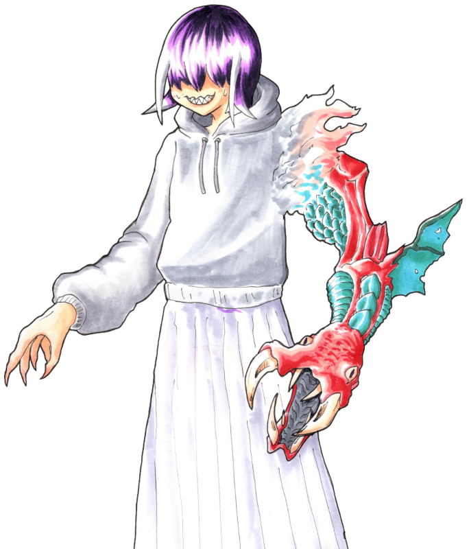
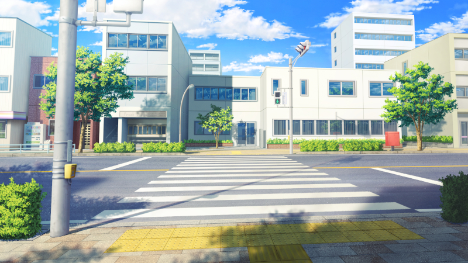

GM:雅
メインログ / 雑談ログ
Character Sheet
| PC1 | ： | “ホワイト・ライン” | 暗夜 走一 | (キャラシート) | PL | ： | タンゴ | ||
| PC2 | ： | “伝令使の杖” | 白波 響 | (キャラシート) | PL | ： | LISP | ||
| PC3 | ： | “どっちつかず” | アムピ | (キャラシート) | PL | ： | がぶらす | ||
| PC4 | ： | “ヴァルプルギス” | 五月女 詠 | (キャラシート) | PL | ： | めい |
Index
◆Pre play◆HO&PC紹介
◆Opening Phase◆
01 見知らぬ知人
02 叩き上げ屋
03 藪から見た景色
04 深き淵より
◆Middle Phase◆
05 幕開け
第5回目開始ポイント
Pre play
HO&PC紹介
GM : ではでは、PC1のソウイチくんから自己紹介をお願いしよう！
暗夜 ソウイチ : うっす！

暗夜 ソウイチ : 暗夜走一、26歳！
暗夜 ソウイチ :
(元)レースドライバーにして、清廉潔白かつ公明正大な熱血漢のヒーロー。
自分の派手な活躍よりも、市民の安寧を良しとする男。
親会社の業績不振によるレースチームの解散と自身の人気低迷が重なり、プロヒーローを解雇されてしまった。
現在は活動費を自分の貯金から捻出し、生活費は日々のアルバイトで賄っている。
ブラコンの噂がある。
暗夜 ソウイチ :
ピュアサラマンダーシンドローム。
心臓を白く燃え上がらせ、莫大なエネルギーを生み出すことができる。
ただし、ソウイチは生み出したエネルギーをコントロールできない。
エネルギーを使って動く装備品を使用することで戦闘を行う。
武器は白炎が噴き出す槍、"チェッカーフラッグ"。
暗夜 ソウイチ : 以上！
GM : ありがとう！ ストレートでかっこいいお兄ちゃんだけど、ストレートすぎるが故に……ってヤツだ
GM : そんなソウイチくんのHOはこのお方
◆PC1用ハンドアウト◆
ロイス："マーティア" ライオネル・トラボルト
アナタは落ちこぼれヒーローだ。
パッとしない、運がない、シンプルに弱い……ともかく理由はなんでもいい。
お情けからか、そんなアナタにUGNは廃棄されたFHセルにあるとされる遺物の回収を命じる。
至極単純な任務の帰り。空を裂くような轟音の轟く暗雲の元で、アナタはヒーローを名乗る男と邂逅を果たすのであった。

ライオネル : 「師匠！ オレとまた戦ってくれ！」
GM : 誰なんだコイツは、ってことで弟子を名乗る不審者です
暗夜 ソウイチ :
なんか知らんがいいぜッ！！！！
でもコイツの弟子になってもヒーローとして就職できるか怪しいぞ
GM : そこら辺は追々、ね……（？）
GM : ではPC2へ！ 白波響さん、いけるか！
白波 響 : はーい

白波 響 : 白波響、24歳でふたりめの大人枠だ
白波 響 : もともと支援専門のヒーローだったけど、相棒を亡くしてから戦う力を求めて遺産「欲望の姫君」に手を出し、新たな力を得たものの、代償としてあらゆるソシャゲをコンプすることを強いられている哀しき課金モンスター！
白波 響 : 攻撃力はあんまりないけど、常勝の天才でたぶんお釣りがくるはず
白波 響 : デイリーに追われてヒーロー活動どころではないらしいのでなんとか社会復帰したい。よろしく頼む！
GM : 過去も現在も、色んな意味でツラい……！
GM : と、いうワケで。社会復帰を手伝ってくれるHOの方はこちら
◆PC2用ハンドアウト◆
ロイス："ノックアップ" 西堂和孝
アナタも落ちこぼれヒーローだ。
活動が地味。素行不良。ウケが悪い……ともかく理由はお任せする。
そんなアナタ宛に『ネレウス計画』なるプロジェクトへの招待が送られる。
どうやらオーヴァードの基礎能力を向上させるUGN主導のプログラムにアナタは選ばれたようだ。
計画当日。アナタを出迎えた"リヴァイアサン"霧谷雄吾は隣の男を教官として紹介するのだった。

西堂和孝 : 「人気が出ないのも道理だな。叩きあげる甲斐があると云うものだ」
GM : 教官のおじです。よろしくおねがいします。
白波 響 : 私の運営する攻略まとめサイトは大人気だぞ。よろしくよろしく！
GM : ネットの名声がデカい！ ほな次へ！
GM : PC3、アムピ！

アムピ : はーい、生まれて12年のアムピです！
アムピ : カオスガーデンで何者かに創造されてはるばる日本へ来ましたが、他のＡオーヴァード達がヒーローとかで身を立てていく波に乗れず大幅に出遅れました
アムピ : それもこれも双頭の蛇(どちらにも進む)性質のせいです。温厚だけど非常に優柔不断な性格をしています。
アムピ : 酷い時にはヴィランに同情して回復したり、話がよくわからなくなってその場からいなくなったりします。二つ名である"どっち忠かず"は他者からつけられた蔑称で、活動名義はそのままアムピです
アムピ :
能力はキュマイラ/ソラリス！
持前の毒とか装甲低下とかを付与して殴るよ、奇跡の雫で一発だけ蘇生もあるよ
アムピ : そして腐っても幻獣、クライマックスはルーラーで有利に立ち回ろう！
アムピ : 人間態の立ち絵はじきに生えます、よろしくお願いします！
GM : ﾆｮﾛﾆｮﾛ…これからどうなっていくか注目蛇にょろねぇ…
GM : そしてそんなあむぴっぴのHOはこちら！
◆PC3用ハンドアウト◆
ロイス：謎の男女コンビ
アナタすら落ちこぼれヒーローだ。
脛に傷のある。参入したばかり。クセが強い……ともかく理由があるようだ。
空を震わせる轟音の正体を探るべく現場に急行するアナタは、裏路地で苦悶する女と、それを介抱する男の二人組と出逢うのだった。

女 : 「苦悶する女でぇす」

男 : 「介抱する男っす」
GM : 日本人ではないみたいですねぇ（雑すぎる紹介）
GM : まぁ、おそらく……良い感じに絡める……といいな！
GM :
てことで、最後のPCへ！
GM : 深淵より召されよ！ 五月女 詠ちゃん！
五月女 詠 : はーい！ 今回は空気を読まずに台詞形式でいきます

五月女 詠 : 「わたしの名は“ヴァルプルギス”────深き闇の眷属にして、災厄を呼ぶ魔女だよ」
五月女 詠 : 「この世に受肉してからの歳月は十六年。降臨日は五月一日……」
五月女 詠 : 「わたしは世界を守護せし秩序の砦……その幼き盾の一人として育てられたの」
五月女 詠 : 「そして、詠唱によって風と雷の魔術を操る魔女として、わたしは光差す表層の世界へと舞い上がった」
五月女 詠 : 「だけど、わたしはあなたたちがヒーロー……なんて呼ぶような存在じゃない……」
五月女 詠 : 「何故ならわたしは、呪われた血と魔力を受け継いでいるから」
五月女 詠 : 「かの戦乱の時代に現われし深淵の亡者……ゴスペルと呼ばれた異端者の、ね」
五月女 詠 : 「大いなる陰謀により、わたしの正体はもう白日の下に曝されている……。無垢なる仔羊たちは、わたしを光の使者とは決して認めない」
五月女 詠 : 「でも、その認識で正しい……。だってわたしは最初から、人々を救う気なんてないの」
五月女 詠 : 「むしろ、その逆。深淵の魔女であるわたしは、この世界を滅ぼす運命にある……」
五月女 詠 : 「わたしにかけられた忌まわしき封印が完全に解ける刻、世界は闇に呑まれるでしょう」
五月女 詠 : 「この封印は、わたしが欲望の咎人たちを狩り、その血を浴びる度に解けていく……約束の日は近い……」
五月女 詠 : 「表層の世界を彷徨う哀れな仔羊たち。恐れ、慄き、震えて待ちなさい……」
五月女 詠 : 「わたしに深淵に導かれる、その刻を────」
五月女 詠 : 終演です（以上です）。
GM : 非常に濃い暗黒面の気配を感じるガール……。過去がとても重い。
GM : 深淵へと導かれる詠ちゃんのHOはこちら！
◆PC4用ハンドアウト◆
ロイス："ネーム・オブ・ローズ" ローザ・バスカヴィル
なんと、アナタは落ちこぼれヒーローだ。
もう理由はお任せしたい。
落ちこぼれではあるが、奇妙な縁もありUGN日本副支部長のローザ・バスカヴィルとコネクションがある。
『ネレウス計画』なるプロジェクトを訝しむローザは、その調査を依頼するのであった。

ローザ : 「どうぞ、よろしくお願いします」
五月女 詠 : 知ってるけどあんまり知らない女の…依頼！！
GM : 霧ちゃんの出番が多すぎて影に隠れ気味な副支部長、登場！
五月女 詠 : 大体霧ちゃんが便利すぎるのが悪い
GM : 霧ちゃんを監視する人をどうすればいいのか、扱いづらい側面もある…
GM : ではでは、以上のPCとNPCたちで始めていきますよ！
暗夜 ソウイチ : よろしくお願いします！
アムピ : ウオーー！どいつもこいつも濃いぜ！よろしくお願いします！
五月女 詠 : よろしくお願いします！
GM : そして登場侵蝕ボタンと加算ボタンがついてるので、是非ご活用を……
五月女 詠 : ありがたい！
アムピ : 便利なのよこれ～(おば)
GM : 素材を提供してくれたぴっぴに感謝！
GM : ここふぉりあのおばもいます
GM : では「Hero & AchieVers」始めていきます！
Main play
Scene 01 見知らぬ知人
GM : 登場PCはソウイチくん！
暗夜 ソウイチ : 33+1d10 (33+1D10) ＞ 33+4[4] ＞ 37
GM : おっけぇ、ソウイチくんは移動手段ってビークルかな？
暗夜 ソウイチ : ヒーロー活動用のビークルは会社に返したぜ！
暗夜 ソウイチ : 自前のクルマは持ってる設定だけど、ソウイチは普通車を攻撃に使ったりはしないぜ！
暗夜 ソウイチ : データ上はできるけどな！
暗夜 ソウイチ : そういうわけで徒歩がメインです
GM : 世知辛い理由もある！ それじゃあ現場までトボトボ来た設定でいこう。

GM : ……アナタはUGNからの依頼で、放棄されたハズのFHセルとして利用されていた施設に辿り着いた。
GM : 依頼の内容はセル内部に破棄されたとされる、大量の電力を保有するバッテリーの回収である。
GM : 不具合のせいか、不定期に電力サージを引き起こし近隣に軽くはない被害が出始めている。トップヒーローを呼ぶまでもないと判断したのか、ちょうど暇のあるアナタに依頼した……というワケらしい。
GM : そんなこんなで、アナタは僅かな対侵入者用トラップを掻い潜りながら奥へと進むのであった。
暗夜 ソウイチ :
「ふむふむ……回収物はバッテリーか！」
「緊急性こそ低いが、危険物だな！！」
暗夜 ソウイチ :
「事故を起こし、被害が出る前に回収！」
「うむ、大事な仕事だッ！！」
暗夜 ソウイチ : 地味で単純な仕事ではあるが、ソウイチは意義を見出だせる仕事だと、十分な熱意を持って施設を進む。
GM : ……堂々と施設の中を進む。道中、タレットなど対人トラップがアナタを出迎えるも大した脅威にはならなかった。
GM : そうして、辿り着いた先には重厚な扉が道を塞ぐ……
GM : ワケでもなく。
GM : 普通に開け閉め可能な防火扉を隔てた研究室に、火花を放つ捨て置かれた物体があった。
GM :
目視する限り、サイズは一般的なスマホ程度。
しかし迸るエネルギーがソレをバッテリーだと気づかせてくれるだろう。
暗夜 ソウイチ : 「発見！ 予定外も悪くないが、順調なのは良いことだ！」
暗夜 ソウイチ :
グローブとニッパーを取り出して、バッテリーを少し解体。
持ってきた耐火袋にしまって安全を確保する。
暗夜 ソウイチ : 元レーサーであるソウイチは、簡単な技術職でもあるのだ。
暗夜 ソウイチ :
「ではさっさと帰るとしよう！」
「これならソウジに夕方顔を見せに行く余裕もあるだろう！」
GM : 手慣れた手際でバッテリーを回収したアナタは、これから悠々とした帰路につく……。
GM : ハズだったが、この世界は常に非日常が隣り合う。
GM : ド ォ ン ！ ！
GM : 激しい爆発。あるいは、落雷のような鋭い衝撃。
GM : 施設の中にいても理解できる、外で何かが起きたのだと。
暗夜 ソウイチ :
「！！」
瞬間、ソウイチの体が白い炎に包まれ、臨戦態勢へ。
暗夜 ソウイチ : ドップラー音を伴うほどの速度で、すぐさま音のした地点へ駆け抜ける。
GM : ……白炎の軌跡を残し、外へと飛び出す。

GM :
そこでアナタは信じられないモノを目にする。
どんよりと空を覆う厚い雲、陽の差すはずもない曇天のソラに……。

黒龍 : 「────────」
GM : 龍と呼ぶに相応しい、超巨大な化け物が鎮座していたからだ。
暗夜 ソウイチ :
「これは驚いたな！！」
「キミ！！ 話は出来るだろうかッ！？」
アニマルオーヴァードの迷子という可能性もある。ひとまず対話を試みる。
黒龍 : 「────────────」
GM : 話が通じるワケもない。アナタの声量でも届かないほどのサイズなのもあるだろう。大橋を飲み込めそうな程の巨体だ。
GM : だが、街を睥睨していただけだった龍はグラリと天へ頭を掲げると……。
黒龍 : 「████████████████ーーーーーッッッ！！！！！！」
黒龍 : 鼓膜を突き破るほどの大咆哮を発し、おおよそ数十発もの落雷を街へと呼び落とす！
黒龍 : そして、その内の一撃が音を越えてアナタへと迫る────
GM : 10D10+5 (10D10+5) ＞ 68[8,5,3,10,9,4,9,8,8,4]+5 ＞ 73
GM : では、リアクションを取る場合は73を超えてみて頂いて…
暗夜 ソウイチ : えっdx間違えたとかではなく！？
暗夜 ソウイチ : 流石に無理無理！！
GM : ではないです！ まぁ仕方ないけど、大丈夫！
暗夜 ソウイチ :
雷に向かって白炎と共に槍を突き出すが……
圧倒的なエネルギー差の前に炎の保護膜は一瞬でかき消されてしまう。
暗夜 ソウイチ : 「ぐ、おおおおおおッ！！！！」
GM : まさに絶対絶命。壮絶なエネルギーの衝撃がアナタを焼き尽くさんと迫る────。
GM : まさにその時だった。

？？？ : 「間に合ったァ！！」
？？？ : 「ズオリャア！！」
GM : 雷撃を裂いて現れ、装甲をその身を纏う戦士が……アナタの前に現れたのだ。
？？？ : 「よぉ師匠。こっちでは生きてるみたいだな！」
GM : やけに馴れ馴れしく話しかけてくるこの人物に、アナタはもちろん見覚えはない。
暗夜 ソウイチ : 「おかげさまで生きているぜッ！！ ありがとうッ！！！！」
暗夜 ソウイチ : 「──ところでキミは誰だろうかッ！！ たぶんオレはキミの師匠では無いと思うがッ！！」
？？？ : 「死にかけたってのに相変わらずだ！ そうだな、オレは……」
？？？ : 「ライオネル、そう呼んでくれ」
暗夜 ソウイチ :
「了解だ！！ よろしく、ライオネルクン！」
空いた手でサムズアップする
ライオネル : 「おうよ！ んでだ、師匠……」いつの間にやら武装が解除され、生身の状態だ。
ライオネル : 「オレ、もうガス欠なんだよ……」 先ほどの頼もしさとは打って変わって、やや情けない声色
暗夜 ソウイチ :
「何ィッ！？」
「それなら仕方ないな！！」
「後はオレが引き受けようッ！！」
暗夜 ソウイチ : 「キミには支援と連絡を頼む！！」
暗夜 ソウイチ :
「被害を食い止める時間稼ぎくらいはオレ1人でも出来るさ！」
先ほどの雷を見てもなお、槍を龍に向けて掲げる。
ライオネル : 「…………」さっきの威力を体感したのにマジかという顔
ライオネル : 「いや、それでこそ師匠だな！ 頼もしいぜ！」
ライオネル : 「けど、一人じゃムチャだからな……ムチャどころの話じゃない」
ライオネル : 「……師匠、なんかエネルギーを補給できるものはないか？」周りをキョロキョロと
暗夜 ソウイチ :
「エネルギー形態にもよるが！」
「選択肢は2つ！」
暗夜 ソウイチ :
「オレから熱エネルギーを吸い上げるか！」
「後方に捨て置いた袋の中の特殊バッテリーから、電気エネルギーを充電するかだな！」
ライオネル : 「めっちゃ悩ましいが、バッテリーならありがたい！」 ライオネルの腕に巻かれた端末を指さして
ライオネル : 「んでだ、師匠。ヤツに一発ぶち込むことってできるか？」手慣れた手付きで、バッテリーと端末を繋いでいく
暗夜 ソウイチ :
「出来る、いや、やるさッ！！」
「ゴールまで走り抜けるのはお手の物だからな！」
ライオネル : 「マジでありがてぇ！ ヤツにバカ熱い一撃を食らわせてやってくれ！」 俺があとに続く、とライオネルは続ける。端末には急速にエネルギーがチャージされているのか火花が散っていた。
暗夜 ソウイチ :
「OKAY！」
「テールトゥノーズで付いて来い！！」
暗夜 ソウイチ : ソウイチの心臓の白炎が一層輝いて、コンクリートを踏み砕く勢いで空中へ踏み切る。
暗夜 ソウイチ :
突き出した槍はロケットのように加速して、龍に向かい突撃する。
ドン・キホーテの無謀な勇気と共に空を駆ける！！
黒龍 : 「────────！！」
黒龍 : 貫かんと迫りくる炎。それを危機と認識したのか、龍は口を大きく拡げてエネルギーの充填を始める。
黒龍 : 放たれればオーヴァードでさえ一溜りもない熱量の収束。それがソウイチへ向けて撃ち放たんとしていた。
暗夜 ソウイチ :
ソウイチの槍に迷いはない。恐れがない。
次の瞬間に生命が尽きたとしても。
正義に殉じたのだから悔いはないという信念、あるいは狂気。
それらを燃やして、ただ一点に懸ける！！
暗夜 ソウイチ : 「止められるもんなら、止めてみろッ───！！」
黒龍 : アナタを焼き尽くさんとする閃光が迸る。そうして放たれる必滅の一閃は────
ライオネル : 「右から追い抜き失礼！」
GM : 赤刃がマシンのテールランプのように軌跡を描き、龍の頭上へと昇った。
ライオネル : 「コイツは俺と師匠からの、プレゼント……だッ！！」
ライオネル : 打ち下ろした刃は龍の頭蓋を裂くことはなかったが、その大きな衝撃はチャージを中断させるのに十分な威力だった
黒龍 : 「！！？」 顎の中で行き場を失ったエネルギーのダメージに苦悶する
ライオネル : 「師匠、やっちまえ！」
暗夜 ソウイチ : 「ライン確保感謝！！」
暗夜 ソウイチ : 「行くぜ───コイツでフィニッシュだッ！！！！」
暗夜 ソウイチ :
一直線に龍の口蓋目掛けて突撃……
槍が龍の上顎に刺さった瞬間、白炎が炸裂する。
暗夜 ソウイチ :
衝撃に合わせて槍を引き抜き……
勢いのまま回転して、龍の眉間に石突を押し付ける！
白炎と黒煙を巻き上げながら龍の頭に突き刺された槍は、立てられた旗のごとく。
暗夜 ソウイチ : 「どうだ！！ 荒っぽくて悪いが、頭も冷えただろう！？」
黒龍 : 「██████████……！！ ███████████████……」
黒龍 : 地響くような唸り声をあげ、その一撃に龍はよろめく。
ライオネル : 「……！」
黒龍 : そして、その鎌首をアナタから天へと向けると……
黒龍 : 曇天の中へと隠れるように、その姿を晦ませて退散していったのだった。
ライオネル : 「……逃げたか。相変わらず逃げ足の早いこった」滑るようにソウイチへ近づいていく
暗夜 ソウイチ :
「確保出来なかったのは残念だが、街への被害は一旦止めることが出来た！」
「初期対応としては上等だろう！」
ふうっ、と額の汗を拭いながら
ライオネル : 「ああ、そんなに被害は出なかった……と思いたいが……」
GM : 見下ろせば街のあちらこちらから微かに煙が上がってはいるものの、救急隊や他ヒーローの集結により落ち着きを見せ始めているようだ。
暗夜 ソウイチ :
「キミはよくやってくれたさ、ライオネルクン！」
ライオネルの肩を抱き、称賛する。
暗夜 ソウイチ :
「キミの助けがなければ、オレも危うかった！」
「撃退出来たのはキミが駆けつけてくれたからだ！」
ライオネル : 「ふ、ふふ……」あまりの褒め殺しに、仮面の下から笑い慣れていない声が漏れる
ライオネル : 「……ん゙ん。い、いや。これも師匠のお陰だ」一転、気を取り直して
ライオネル : 「この世界でもイイ腕前をしているみたいで一安心だ」
GM : ……ふと、ライオネルの繰り返す「この世界」という言葉にアナタは引っかかりを覚える。
暗夜 ソウイチ :
「発言から察するに、キミは別の世界の来訪者だろうか！」
「噂には聞いていたが、実際に会って話すのは初めてだ！！」
ライオネル : 「うおっ、すっげぇ単刀直入に来たな！ こいつは初めてだ」否定することもなく
暗夜 ソウイチ : 「速いことに損はないからな！ 話もレースも！」
ライオネル : 「ま、そういうことなんだが……改めて自己紹介させてくれ」軽く咳払いをして
ライオネル : 「オレはライオネル。"マーティア"ライオネル・トラボルト」
ライオネル : 「Dx-104-RWからやってきた、平行世界のヒーロー……」
ライオネル : 「そして、アンタの弟子だった男さ」
暗夜 ソウイチ :
「師匠とオレを呼ぶのはそういうことか！」
「では既に知っているかもしれないが、礼儀としてオレも自己紹介させてもらおう！」
暗夜 ソウイチ :
「"ホワイト・ライン"暗夜走一！」
「2か月前までは"ホワイト・ロード"だったんだが、そっちはクビになった！」
「今はフリーのランク外ヒーローさ」
GM : ライオネルは一瞬、「マジか」とおどけたような態度を取る
ライオネル : 「逆に驚きだな。ランク外？ 師匠がか？」やや訝しんで
ライオネル : 「オレん世界じゃあ師匠は……レジェンドの称号を戴いてたんだが」
暗夜 ソウイチ :
「ぶっ、はははははッ！！！！」
「レジェンドとは驚いたぜ！！」
暗夜 ソウイチ : 「確かにトップヒーローだった時はあったが、すぐにランキングには載らなくなったオレがか！」
ライオネル : 「はぁ～、納得いかねぇな！ ここじゃ上にどんなヤツがいるってんだか、もしくは民衆の目が腐ってるかだが……」不服そうにﾎﾟﾘﾎﾟﾘと頭を掻いて
暗夜 ソウイチ :
「ま、オレもランキングに興味が無かったからな！」
「テレビの番組やらネット動画に出演してランキングを上げるより、オレはちょっとしたことでも不幸の予防をしたかったんだ」
暗夜 ソウイチ :
「だからランキング外になったし、スポンサーも降りた！」
「別に誰も恨んじゃいないさ。それぞれが望むようにした結果さ！」
ライオネル : 「…………」思う所があるのか、少しだけ黙りこくって
暗夜 ソウイチ :
「オレの立場はそんなとこだ！」
「ともかく！ よろしくな、ライオネルクン！！」
握手を求める。
ライオネル : 「……ん、ああ。こっちでもヨロシクな師匠」その握手に応じて
ライオネル : 「んで、だ。これから会いに行かなきゃならない人がいるんだが……師匠も来るか？」
ライオネル : 「任務帰りみたいだし」譲ってもらったバッテリーを指して
暗夜 ソウイチ :
「ああ！いいぜッ！」
「それと、さっきのデカいトカゲ……ドラゴンか？ アイツについての話もどこかで聞かせてくれ！」
ライオネル : 「モチロンだ！ ええと、そんなら……」端末の液晶を弄ると、腕上にホログラムで出来たマップが浮かび上がる
ライオネル : 「キリタニさん、キリタニさん……。おっ、ここだな」ある地点が赤い点で示される
ライオネル : 「そんじゃ着いて来てくれ！ 近くの支部まで移動する！」
暗夜 ソウイチ :
「了解！」
クルマに乗ってきてないので、走る為のストレッチを始める
暗夜 ソウイチ : ライオネルに親近感/不信感のPでシナリオロイス決定！
GM : おっけい！ オレら仲良し師弟（初対面）
GM : じゃあ締めの文章でシーン終わり！
GM : 平行世界からの使者を名乗るライオネル。アナタは彼に連れられ、近くの支部へと向かうことになった。これから巻き起こる壮大な事件へと足を踏み入れたことも知らずに……。
GM : シーンエンド
Scene 02 叩き上げ屋
GM : 登場PCは白波響さん！ 登場どうぞ
白波 響 : 39+1d10 (39+1D10) ＞ 39+2[2] ＞ 41
GM : 低燃費っぴ、支部には徒歩できた感じでいいかな
白波 響 : いいよ～
GM : おっけ～、じゃあ霧ちゃんたちと顔を合わせる直前まで描写しよう

GM : 曇天の空の下、アナタはとあるプロジェクトへの招待を受けてUGNの支部へ足を運んでいた。
GM : プロジェクト名"ネレウス計画"。軽く概要を読む限りでは、オーヴァード向けの講習のようなものらしいのだが……。
GM : ともかく、アナタはそのプロジェクトに参加する為に支部へと足を踏み入れたのだが……。
GM :
支部の周りが廃ビルやらに囲まれているせいか、やや雰囲気が暗い。
勤務する職員も生気を失ったように書類やタブレットに向かい合っている不気味な支部だ。
GM : 近隣の治安が芳しくないこともあり、支部のエージェントたちは苦労しているのかもしれない……。そんなことを思いつつ、支部長室の前までやってきたのだった。
白波 響 : 「ごきげんよう」 片手でスマホを操作しながら扉を開いて入室

霧谷雄吾 : 「"伝令使の杖"、ですね？ ようこそ、初めまして」
GM : 部屋へ一歩踏み入れば、清廉としつつも真摯な態度を伺わせるUGNの大黒柱。"リヴァイアサン"がアナタの到着を待ちわびていた。
白波 響 : 「その名で呼ばれるのは久しぶりだね。最近は指揮官、マスター、騎空士に先生と副業のほうが忙しかったからヒーロー活動もめっきりご無沙汰だが……」
白波 響 : 「その通り、私が”伝令使の杖”だ。ただの講習かと思えばあなたほどの人物が現れるとは、何事だろうか？」
霧谷雄吾 : 「いえ、計画の責任者ですから。せめてアナタには挨拶しなければと思いましてね」微かに笑みを浮かべるが、疲労のせいか生気が宿っていないように思える
白波 響 : 「なるほど。あまりに活動実績がないからライセンスを試すとか、そういう理由でなくてよかった」
白波 響 : 生気の足りない顔で正面を見て話しながら、手のほうはスマホをポチポチしてデイリークエストを消化している。
霧谷雄吾 : 「ハハ、ライセンスは運転免許証みたいなモノですから。取り消すにしても相応の理由がない限りはありませんよ」スマホに関しては特に気にせず
霧谷雄吾 : 「さっそく本題なのですが、白波さん」改まって
霧谷雄吾 : 「アナタはこの計画に参加する、ということでよろしいですね？ 講習という名目上、それなりの時間と労力も取られることになりますが……」 無論、支障のない範囲でと付け加えて
白波 響 : 「それは私の”遺産”のことを気にしてのことかな。確かに一秒でも時間が惜しいのは確かだが」
白波 響 : 「ずっとこのままというわけにもいかないからね。ちゃんと覚悟を持って参加するつもりだよ」 そう言いながら操作するスマホの画面では、主人公がクエスト報告のために徒歩でフィールドを歩いている。
霧谷雄吾 : 「ヒーローが抱える負担の軽減案も政策に加えたいですからね。利用するようで申し訳なく思いますが、参加してくださることに感謝を」軽く頭を下げて
霧谷雄吾 : 「……ああそうだ。実は講師の方がもういらっしゃっているんです。お会いになっていきますか？」
白波 響 : 「もう？ なかなか仕事熱心だ……。そうだね、挨拶させて貰おう」 答えながらデイリーを終え次のゲームを起動。休む間もなく起きている間ルーティーンのようにこれをずっとこなしている。
霧谷雄吾 : 「それでは……」 講師に連絡しようと携帯に手をかけるが……
西堂和孝 : 「その必要はない」
GM : いつの間にやら、白波の背後に現れた男が霧谷を制した
白波 響 : 「ほう……私の背後を取るとはなかなかやるな」
白波 響 : そう言いながら明後日の方向を見て話している。白波はド近眼だった。
西堂和孝 : 「どの口が言う。どの口が。瓶底のメガネでも買ってこい」
白波 響 : 「眼科……眼科に行っている時間がない……」 あとお金も
西堂和孝 : 「……」唸りを上げて、思わず眉間を抑える
霧谷雄吾 : 「"ノックアップ"、来ていましたか。彼女は……」白波を紹介しようと口を開く
西堂和孝 : 「"伝令使の杖"白波響。だいたいは知ってる」霧谷の言葉に被せて
西堂和孝 : 「……白波。オマエは現状を変えたいとさっき言っていたな」先程の会話を聞いていたのか、アナタに問う
白波 響 : 「よく聞いているな。さすがは講師といったところか」 そういいながら手は変わらずスマホをひたすらに操作している
西堂和孝 : 「ふっ、こんな役職に収まる気はなかったがな……」
西堂和孝 : 「政府の人間に徴用されたという意味では、オマエとお仲間だ」肩を竦めて
西堂和孝 : 「……俺は"ノックアップ"西堂和孝。人呼んで叩き上げ屋だ」
西堂和孝 : 「いっぱしのオーヴァードにしてやるつもりだが、まあ……」
西堂和孝 : 「どうなるかは、お前次第だな」
霧谷雄吾 : 「ぶっきらぼうですが、悪い人ではないのであしからず」横から
西堂和孝 : 「…………」軽くため息をついて
白波 響 : 「む、ため息をつかれるほどか？」
西堂和孝 : 「いいや、コイツが嫌いなだけだ」霧谷を指して
白波 響 : 「何やら訳ありのようだな……」
西堂和孝 : 「政府の人間はあまり好かん。なんせ……」
西堂和孝 : 「……いや、いらんことを言った。今のは気にするな」言葉を濁す
白波 響 : 「き、気になるじゃないか……。そういう意味深な台詞を投げっぱなしにして回収しないままサ終してきたソシャゲを私は何本も見て来たんだぞ……！」
白波 響 : 「ハッ！ ハア……ハア……失礼。つい発作が」
西堂和孝 : 「……俺の好感度が一定まで達したら幕間にでも追加してやる」意外にもそういう話はできるようだ
白波 響 : 「ふむ……そういうことなら、講習を頑張るとしよう」 前向き
西堂和孝 : 「せいぜい気張れ。俺も何とも言えないユニットの使い道を探すのは嫌いではないからな、早々見放すことはないから安心しろ」やや棘のある言い方だが、アナタを買っている気がする
霧谷雄吾 : 「ふむ、少しずつ打ち解けているようですね」蚊帳の外でも気にせず、その様子を見守って
白波 響 : どのゲームも完凸星5ばかりの自分のデータを頭に思い浮かべて少し微妙な気持ちになった。
白波 響 : 「……さて、顔合わせもできたが、用件は以上だろうか？」
霧谷雄吾 : 「ああいえ、今回は他の参加者の方もいらっしゃる予定でして……その方たちとも顔を合わせることになるかと」
白波 響 : 「他のヒーローか……それは楽しみだな」 頭の中でガチャ演出を再生中…
霧谷雄吾 : 「あと3人ほど、ですね。もう少しでいらっしゃるかと……」
白波 響 : 「……10人じゃないのか……」 露骨にテンションダウン
西堂和孝 : 「デイリーで引ける単発だ。ポテンシャルマン（※）しかいないがな」※使いようによっては刺さる場面もある性能を持つキャラのこと
白波 響 : 「よく知ってるな。まあ今の世の中そういうゲームをまったくやったことがない人のほうが珍しいか」
白波 響 : 「（私としても、下手に大物のヒーローが現れるよりやりやすくていいかもしれないな）」
霧谷雄吾 : 「各々が到着するまで、どうか白波さんはくつろいで頂いて……」
白波 響 : 「では失礼して……電源を貰ってもいいかな」 座って分厚いノートパソコンを開く。デスクトップには無数のゲームアイコンが転がっている。
霧谷雄吾 : 「確か窓際の方に……」
GM : そうやって指を窓に向けた、その時。
GM : ────突如として、地を揺るがす轟音が轟き渡る。
黒龍 : 「████████████████────────ッッッ！！！！」
GM : そうして空を裂いて現れたのは闇を深く纏った漆黒の龍。その巨体はまさに空を我が物とするほど圧倒的だった。
白波 響 : 「――ッ！ ドラゴン……！？」
西堂和孝 : 「ふぅん……」 軽く顎を撫でて、興味のなさそうな声色で唸る
白波 響 : 「ヴィランの仕業か……？」 真面目な表情になり窓から外の様子を確認する。いざとなれば出動も辞さない構えだ。
霧谷雄吾 : 「ついに現れましたか。白波さんはそのまま待機で、私たちはこのまま様子を見ます」どうやら訳知りのようで、アナタを制す
白波 響 : 「嫌に落ち着いているな……。わかった、ここは指示に従おう」 座ってゲーム起動。
西堂和孝 : 「それはそれで落ち着きすぎな気もするが……」アナタを横目に
GM : ……街の上空に現れた龍との距離は離れてはいるものの、この支部から全長を目視できるほどの巨体だ。
GM :
そしてその咆哮は身を揺るがし、地を震わせ、鼓膜を劈く。
より近くにいるであろう人間ならば、恐怖も合わさりまとも動くことなど不可能だろう。
GM : ……だが、その恐怖の権化とも言える龍に立ち向かう二つの軌跡があった。
GM :
空中に尾を引く白炎と赤刃。
圧倒的な存在を前に、その二つが巨龍に立ち向かい。それを見事に退けてみせたのだ。
霧谷雄吾 : 「ふむ、看板に偽りなしとはよく言ったものです」その様子を落ち着いた様子で見届けて
白波 響 : 「一体なんだったんだ……」 デイリー消化終了
霧谷雄吾 : 「それも後々説明させてください」
西堂和孝 : 「……白炎。アイツが暗夜の……」西堂は龍をそっちの気に
霧谷雄吾 : 「……暗夜ソウイチさん、でしたか。どうやら彼は見つけられたみたいですね」
霧谷雄吾 : 「恐らく、彼らはこちらにやってくるでしょう。その時に改めて、『ネレウス計画』の……その目的をお話しましょう」
白波 響 : 「……やはりただの講習ではないということか」 パタンとノートパソコンを閉じた。
西堂和孝 : 「変なことに巻き込んじまって、すまねぇがな。まったく……」聞こえるか聞こえないかの声でボソリと
GM : ……黒い龍の出現と共に一変した空気。講習と聞かされていたこのプロジェクトに隠されたものとは一体何なのか……。
GM : 暗く淀んだ空のように、霧谷の思惑は不明瞭に霞んでいくのだった……。
白波 響 : 西堂和孝 P:親近感／N:隔意 で取得しましょう。Pが表で
GM : ソシャゲの会話チョットデキル。おっけおっけ！
Scene 03 藪から見た景色
GM : 登場PCはアムピ！ 登場どうぞ！
アムピ : あいあい
アムピ : 31+1d10 (31+1D10) ＞ 31+10[10] ＞ 41
GM : ｱｰｳ！
アムピ : 多いぜ
GM : ｱﾑﾋﾟｲｼﾞﾒﾇﾝﾃﾞ……（高燃費）
GM : では軽く導入から！ また黒龍に出て貰います

GM : ────時を同じくして。
GM : 街の上空には巨大な黒龍が現れる事態が発生。地を揺らす咆哮と、激しい落雷が一帯に降り注ぐ災害を巻き起こしていた。
GM : 遠目でも把握できるエマージェンシー。近隣のヒーローには緊急通報が一斉に届き、彼らは迅速に移動を始めていた。
GM : アナタもその一人として、暗雲の下へ赴こうとしている……。

アムピ : 「ひぃ、ひぃ、ひぃ……！」
アムピ : 無人の道を征く一匹。人型で走れば早いのか、蛇形態で進めば良いのかすら定まらない。
アムピ : 「これって特攻命令とどう違うんだろぅ……！ボクが行って何かなるの……！？」
アムピ : ぶちぶちと文句を垂れながら歩みを進める……
GM : とぼとぼ、うねうね……。
GM : どれとも当て嵌まらない移動をしていたアナタ。もう少しで現場に到着しそうというその時だった。
GM : ……上空の巨龍は白と赤の軌跡に慄き、天高くへと退いていく光景を目にすることになったのだった。
アムピ : 「……あれぇ……？」 ぼけっと空を見上げて
GM : 呆然とするアナタの目を覚ますように端末に次の命令が届く。内容は近隣住民の安全確保だ。
GM : 龍が発生させた落雷のせいで一部停電や火災が発生しており、その対処を願いたいとのことだ。
アムピ : 「ぅえぇ……どうしよ、うぇと、どこから……近くに人いるかな……？」徘徊を開始
GM :
とはいうモノの、アナタのいる区域はすっかり無人となっている。
避難訓練が徹底されているのか、ゴーストタウンのように人気が無い。
GM : だからだろうか。ソレはやたらと鮮明に聞こえるだろう。
女 : 「うぇっ ぅえっふ……」
GM : ……喉を詰まらせたような、嗚咽の声が。
アムピ : 「ど、あぇ、ｨ人！？」 だばだばと急行する
GM : その所在を確かめようと、アナタは陽も差さない路地を覗いた。
女 : 「うっ、うへぇ……もぅだめ……きゅーしょくだいこー……」
男 : 「想像以上だったな……。何か飲むか？」
GM : その路地には、ぐったりと横たわる女と介抱する男の姿があった。
アムピ :
「あ、だ、大丈夫ですかーー！？」
思ったよりも大音量になってしまった自身の声量に驚きながら近寄る。
アムピ :
「えﾍと、水、水とか飲みます！？元気になれる水持ってるんですけど！」
最悪の誘い文句を発する芋パーカー女性がやってきたぞ
男 : 「ほわっ！？ な、なんっいやアリガト……いやダレ……！？」
男 : ビクリと肩を揺らして浮かび上がり、三本線が刻まれたネックレスを首元に隠す。
女 : 「ハ～ン……うけとっといて～……」変わらずぐったり
ハン : 「でもスゥ……い、いいのかぁ……？」スゥとアムピを交互に見比べて
アムピ : 「あ゜っ！！！！！別にあﾊ、怪しい者ではなくってぇ！クロス、クロスえぇと……あった！ぁの、ヒーロー！ヒーローで！」
ハン : 「わかったわかった！ そっちが落ち着いてくれ！」
ハン : 「じゃ、じゃあ元気になれる水？ をくれるか？ かなり体力を持っていかれちまってな…… 」スゥを見下ろして
スゥ : 「たのみゅ……」
アムピ : 「ぁ、どうぞどうぞ……！」水筒に入った《元気の水》を渡すわ
GM : レネゲイドスポドリ、ありがたい。ではスゥは遠慮なくグビグビ飲んでいきます。
スゥ : 「ぶはっ……！ リ、リザレクト……！」 飲む為に上体を起こしていたが、再び寝そべって
ハン : 「助かったぜ。ええっと、ヒーローさん……名前は……」
アムピ : 「あ、ボク、アムピって言います……っ、ぉ、お二人は……？」
ハン : 「アムピ、か。柔らかい語調でいいな」
ハン : 「僕はハン。そんでこっちが……」
スゥ : 「スゥでぇす。あむぴっぴマヂライフセーバー。本気谢谢」
ハン : 「態度はこんなんだが、スゥなりに感謝はしてる。こんなんだが」
スゥ : 「んだコラ」ハイキックでハンを蹴る
アムピ : 「ハン、さん、スゥ……さん、柔らかい……しぇしぇ、あふ、ﾍﾍ……」
アムピ : 「ど、どいたしまして……」ペコペコとしきりにお辞儀をして
スゥ : 「くるしゅうない～」ヒラヒラ手を振って
ハン : 「こっちがお礼する側だろうが。アムピも畏まらないでくれ」
ハン : 「ところで……近くのUGN支部って知らないか？ そこへ行かなきゃならないんだが……」スマホを取り出して
アムピ : 「ﾍ、えーとぉ……避難ん～……とかは大丈夫なんですか……？あれ、でもUGN行った方が安全なのかな……ん、でももうドラゴンいないから良い……のかなぁ……？」
ハン : 「ん、ああ。アイツな……もう出てこないと願いたいが……」チラリと空を見上げて
スゥ : 「だーじょぶでしょ……」よいしょ、と身を起こして
アムピ : 「えーと……？と、とりあえず……近くの支部なら……ここ、かな？ぁ、こっちの方が近……いや、こっちかな」
アムピ : 「ここ、で大丈夫ですか……？」地図を表示した端末を見せて
ハン : 「どれどれ……」
GM : ハンは自身の端末と、アナタの端末を見比べている。
GM : その時だ。アナタの端末に一通のメールが届く。
ハン : 「おっと、先にそっちを確認してくれ」視線を外して
アムピ :
「あ、ｶｯ、見ちゃ、ぁ、ありがとうございましゅっ！」
目を逸らしてくれたことに感謝しつつ確認！
GM : 送り主はUGNから、そしてメールの内容は
GM : 「ネレウス計画のご案内」と、題されていた。
アムピ : 「ネレ、ウス計画……？案内……？」コンプラ違反
スゥ : 「読み聞かせてくれんのか～い？」
ハン : 「茶化すな。ネレウス計画、アムピにも届いたのか」どうやら訳知り
アムピ : 「あ゛あ゛！？いや、ッｧ、え、あ、関係者の、方……？」
ハン : 「まあな。僕はまぁ、その補助みたいなもんだが……」
スゥ : 「参加すんのはアチシ～」ひらひら手を上げて
アムピ : 「はァ゛ッ！ｱﾌﾞﾅ、良かった……！」
アムピ :
「えーと……そしたら……お、お二人も、オーヴァードぉ……とか？なんならヒーロー……とか？」
おそるおそる
ハン : 「ん～、ご生憎と……」首を横に振る
スゥ : 「ハンにも案内来てたけど、兵役で苦労したから補助に回ったんだよね～」
スゥ : 「私はまあ、見ての通りだし……受けてもいいかなってヤツ？」 未だに地べたに座っている
ハン : 「オーヴァード向けの兵役……くっ、思い出したくもない……！」 渋い顔で頭を抱えている
アムピ : 「た、大変そう……兵役……って言うと……えぇと、うｸﾞ、ごめんなさいぃ……ボク学校とか行ってないから国とかもわかんなくってぇ……」
ハン : 「……アムピが気にすることじゃない。こっちの都合ってだけだからな」ぐしぐしと表情筋をほぐして
ハン : 「……で、アムピはどうするんだ？ 参加するのか？」ネレウス計画を指しているようだ
アムピ :
「しょの……これﾍ、何ですか……？結局……」
案内開いたら詳細書いてあったりするのかしら
GM : ある！ 内容としてはヒーロー向けの講習（座学や実戦）などが含まれております
ハン : 「……とまあ、僕に知らされている限りだとそのぐらいか。人に合わせて内容も変わるらしいが……」
アムピ : 「なるほろ……こ、講習……っ、ボク本当に勉強したことないョ……！生まれて一回も……っ！」
アムピ :
「え～～っ……ど、どうしよう…え～……！受けた、方が……良いよなぁ～……でも人一杯来るのかな……ぅぐ……変な目で見られたり……するよねぇ……？怖いぃ……」
メカクレ百面相
ハン : 「人数は……片手で数えられるくらい、とは聞いているけど……」少し唸って
スゥ : 「え～、アムピいこうよ～。べんきょー習いに行くってことはぁ、実質がっこーじゃんね？」
スゥ : 「ってことはさ、一緒に通えたら同級生じゃ～ん。ひょ～、青春～」計画の趣旨とズレている気がする
アムピ :
「へぇ？ど、どーきゅうせい……？た、確かに……ﾌ、ぇ、と、友達ｨ……になるかも……って、コト？」
もじもじしだした
スゥ : 「フフフ、しかも私だけじゃないぞ……講習を受けにくるヒーロー共と友達になることもできるだろう……」
スゥ : 「たぶん……」
アムピ :
「ぇ、ﾍﾍ~、へふ、嬉しいかも……？へ、あの、ボク、ボク人間じゃなくって、ボクAオーヴァードなんだけど、ボクみたいな子も来るかな？んふ」
距離の詰め方が下手
スゥ : 「……たぶん！！」 根拠はまるでない
ハン : 「そこは言い切るな。Aオーヴァードは珍しいからな、いるかは確約できん」
ハン : 「気の合うヤツは見つかるかもしれないな。最悪はコイツで我慢してもらうが」スゥを指して
スゥ : 「カスコラ、タココラッ」寝転んだままハンの脛を蹴って
アムピ : 「が、我慢なんてそんにゃ……！……ぇ、その……すごぃ、あの、思い上がりィ……だったら本当にごめんなさい……なんだけどぉ……」
アムピ : 「スゥ、とォ……ハン、とも友達に……なれたり、とか……も……？」
ハン : 「それは……」意外だったのか、ほんの少し視線を泳がせて
ハン : 「……ああ、僕からしてみればスゥの恩人だしな」
スゥ : 「モロ……じゃなくて、モチロンだともさ～。それに、もし来てくれたら～」
スゥ : アナタを収めるように、指でフレームを作って
スゥ : 「ん～……はいっ。これあげるっ！」 いつの間にやら、スゥの掌にアナタの姿が投影されていた
アムピ :
「ん？あれ！、し、写真？」
長身をずいと屈めて
スゥ : 「ムフフ、ホログラムってやつよ～。3Dあむぴ～」
アムピ :
「おあ～、すごぉ……あ、あ、こっちも気に入ってるけど、ボクこっちが良い！」
言うや否や、2m近い身長がシュルシュルと半分程度に縮む。
アムピ : 色味も地味な服装から鮮やかなサーモンピンクとエメラルドグリーンに変わり、やがて一風どころか二風三風変わった蛇になった。
スゥ : 「すっご！ ヘンシンだ、ヘンシン！」きゃっきゃとはしゃいで
アムピ : 「こ、こっちがほんとの見た目ﾍ……な、んだ……！ぇと、友達ぃ……になるなら、さ？見てもらいたい、な……！って！」ﾃﾚﾃﾚ
ハン : 「……」何も言わず、そんな微笑ましい光景を眺めて
ハン : 「よし、早速にはなるが……支部の方へ行くか？ もう集まり始めてるらしいぞ」
スゥ : 「ちょっと思ったけど早いスギない？ フツー数日置かない？」
ハン : 「ぜ、善は急げっていうだろ……」
アムピ : 「そのぉ……もうやってるぅ……のに、今……？連絡、来るんですね……？」
アムピ : 「詐欺、かも……っ！？」ｵﾛ……
スゥ : 「詐欺！？ ハン、どうしよっ！」
ハン : 「いや僕も講師側なんだが……」困った様に
アムピ : 「あ！？そうなんですか！？！？と、ともだちとか言ってごめんなさいっ！？」
ハン : 「ああいや！ 謝らないでくれ、むしろ急なコトで申し訳ないと思っている！」
ハン : 「内容が内容だから、な。スパムと思われても仕方ない」
スゥ : 「まぁねぇ～。異世界の人もいるってんだし、きな臭いよね～」鼻で笑って
アムピ : 「い、異世界……？……？とにかくぅ……詐欺、じゃ、ない！ってことォ……ですねっ……！」
アムピ :
「じゃ、じゃぁ行きます、か……？」
人の姿に戻……車に乗るなら蛇の方が入りやすいのでそのまま
ハン : 「ん、ありがとな。えーっと、どこ止めたっけなアレ……」
スゥ : 「そういうボケいらないよ～」スゥがポケットからキーを取り出すと……
GM : ピピッ。キーの開錠音が、コンテナを積んだ大型トラックから響いた。
スゥ : 「私は後ろで寝るから、アムピは前でいいにょ～」
ハン : 「もう少しコンパクトな車だったらなぁ……」愚痴を吐いて
アムピ :
「蛇に合うシートベルトはありますか……？」
のりこめー＾＾
ハン : 「ダ、ダンボールに……シートベルトをかけてみるか……？」やや困って
アムピ :
「んひ……厳し、そうですかね……」
諦めて人型になりせまぜまと座席にIN
GM :
国際色を越えて、種を交えた交流の始まり。
アナタたちを乗せるトラックはけたたましい排気音を吐き出しながら、新たな出会いの場へと赴いていくのだった……。
アムピ : ✓友情/不安でチェケラ！友情を感じるのが早い
GM : ゆゆうじょうぱぱわー！ おっけー！
GM : ではでは、シーンエンド。
Scene 04 深き淵より
GM : では最後のOP！ 登場PCは詠ちゃん！
GM : 侵蝕ダイスどうぞ～
五月女 詠 : はーい
五月女 詠 : 36+1d10 (36+1D10) ＞ 36+10[10] ＞ 46
五月女 詠 : ｳﾜｰ!!
GM : ｱｰｳ！
GM : 侵蝕率の偏りを感じる。

GM : 風が酷く唸っていた。身を裂くような、空間を破るような暴力的な風。
GM : それもそのはず。その風は、二つほど離れた区域に現れた正体不明の巨龍が発生源であったのだ。
GM : 幸いにも、災いを呼ぶ龍は一時的に退けられたようなのだが……その混乱は地を伝ってアナタが担当する区域にまで波及していた。
五月女 詠 : 「……消えた」
五月女 詠 : 建物の屋上を《軽功》で跳び移りながら現場へと向かおうとしていたが、雲の隙間へと消えていった龍を見て、足を止める。
五月女 詠 : 「遅かったか……。まあ、誰かが退けてくれたなら別にいいけど」
五月女 詠 : 「他のヒーローも、もうかなり動いてくれてるみたいだし……。わたしがやれることはなさそうかな」
五月女 詠 : 《蝙蝠の耳》を使い、被害のあった地区から聞こえる音を捉えてそう判断する。
GM : 混乱と喧騒がヒーローとUGNの手でゆっくりと収束していくのを聞き届けていると、アナタの端末に着信が入る。
GM : 着信先はローザ・バスカヴィル。現在のUGN日本支部の副支部長を務める女だ。
GM : この事態に対する支援の要請なのだろうか？
五月女 詠 : 「……！ ローザ・バスカヴィル……」
五月女 詠 : すぐに連絡に出ましょう、通話かな？
GM : 通話です！ では応じると凛とした声が聞こえます。
ローザ : 「……ご機嫌よう"ヴァルプルギス"、今よろしいでしょうか？」涼やかだが、どこか緊張感のある声だ
五月女 詠 : 「…………」
五月女 詠 : 慣れた手つきで、片手で目元を覆う。まるで仮面を被るかのように。
五月女 詠 : 「こんばんは、冷徹なる秩序の番人さん」 目元を覆う手を下ろし、杖を握る手に力を込めて
五月女 詠 : 「どうしたの？ 声が強張ってる。何か恐ろしいものでも見たのかな」
五月女 詠 : 「たとえば、灰の天蓋を突き抜けて降り立った、漆黒の龍……とか？」 くすっと笑って
ローザ : 「調子は良好のようですね」アナタのおどろおどろしい態度をさらりと流して
ローザ : 「アナタの言う漆黒の龍ですが、さきほど現地のヒーロー1名と身元不明のオーヴァードにより撃退されました。現在はUGNが現場の復旧作業に当たっています」
ローザ : 「そちらの区域に被害などは？」
五月女 詠 : 「無いよ。いたって平和」
ローザ : 「そうですか。では、本題へ移らせて頂きます」他愛もない会話などする気もないのか、淡々と話を進めていく
ローザ : 「時に、"ヴァルプルギス"。ネレウス計画なる話を聞いたことは？」
五月女 詠 : 「ネレウス計画……」
五月女 詠 : 目を瞑って思い返すが、聞き覚えはない。
五月女 詠 : 「過ぎ去りし日々の中の記憶にはない……」
五月女 詠 : 「だけど、大いなる闇の意思がわたしに囁くの」
五月女 詠 : 「その計画は、遥か彼方で……わたしの運命と交差すると……」
ローザ : 「話が早いですね。貴女の言う通り、この『ネレウス計画』を探って頂きたく連絡をさせて頂いた次第です」
ローザ : 「十にも満たない件数ですが、『ネレウス計画』なるプロジェクトへの参加を促すメッセージがヒーローたちに届いているようなのです」
ローザ : 「スパムの類いであるのなら、もっと大規模になるはず。そうは思いませんか」
五月女 詠 : 「選ばれし者にしか許されない計画、というわけね」
五月女 詠 : 「それで、あなたはその計画についてどこまで掴んでいるの？」
ローザ : 「共通しているのは、メールを受け取ったヒーローは共にランキング外であるということ……」
ローザ : 「それに、日本支部長である藤崎さんにこの件を問いましたが……何も知らないようでした」
ローザ : 「R対策室の霧谷氏にも問い合わせをしたのですが……」
ローザ : 「こちらは、まだ返答が返ってきていません」訝しむように唸る
五月女 詠 : 「ふーん……」
五月女 詠 : 「興味深い物語ね」 体が疼くように、屋上を歩き出す
五月女 詠 : 「だから、あなたはこの計画を怪しんでるんだ。きっと神秘が隠されている、と」
ローザ : 「はい。かなりきな臭い案件であると睨んでいますが、規模が小さい故に割ける人員もいないのです」
ローザ : 「なので、もしアナタにその計画への案内が届いたら……」後は言わなくてもわかるだろうと
五月女 詠 : 「冷徹なる秩序の番人さん」
五月女 詠 : 「そんな案内が来なくても、わたしは動くよ。もう、興味が湧いちゃったから」
五月女 詠 : 「契約の交わされし地がどこか分かる？ 今すぐに向かってあげる」 屋上の縁まで歩いていき、空を見上げる
ローザ : 「提出された案内のコピーを転送します。その住所に向かっていただければと」そういうと、ローザから件のコピーが送られてくる
五月女 詠 : 「ありがと」 素直にお礼を言って、端末の画面を見る
五月女 詠 : 「……ここからそう遠くない。それに約束の刻までもうすぐ、だなんて」
五月女 詠 : 「運命はすでに動き始めている、ということね」 どこか嬉しそうな声色で
ローザ : 「……こちらも出来る限りは探りをいれてみます。何かあればご連絡を」
五月女 詠 : 「分かった。……あぁ、でも一つだけ」
五月女 詠 : 「あなた、この話をわたしにして……本当に良かったの？」
ローザ : 「ふむ、というのは？」 アナタの過去を知っているはずであるが、敢えて聞き返す
五月女 詠 : 「わたしはこれから、このネレウス計画に隠された神秘を暴く」
五月女 詠 : 「それが薄汚れた影に満ち、罪に塗れた禁断の真実であったなら……」
五月女 詠 : 「未熟な光の使者たちも、英雄の先に立つ管理者も、全てわたしの儀式の生贄になってもらうから」
五月女 詠 : 「わたしに指図する以上、共に深淵に導かれる覚悟はお持ちよね？ 冷徹なる秩序の番人さん？」 くすくすと、楽し気に笑う
ローザ : 「ふむ」一呼吸の間を置いて
ローザ : 「私が貴女へ依頼するのは、どんな過去をお持ちであろうと個人的な信頼があるからです」
ローザ : 「貴女が何を為そうと、何を起こそうと。発生した責はそれなりに負うつもりです。それを加味した上での依頼ですから」
ローザ : 「貴女の思うままに力を振るった先にあるモノは、すべて凄惨であると決まっている訳ではないと考えていますからね」
五月女 詠 : 「…………！」
五月女 詠 : 「……そ、そう。それなら、別にいいけど……」 熱くなる頬から目を背けるように、俯きながら呟くように言う
五月女 詠 : 「じゃあ、もう切るよ。……いい？」
ローザ : 「ええ、吉報をお待ちしております」 それだけ返事をして
五月女 詠 : 「……巡り来る未来で、また逢いましょう」
五月女 詠 : そう言って、通話を切る。
五月女 詠 : 「……。調子が狂うな……」
五月女 詠 : 屋上の縁へと、両足を投げ出すように座る。
五月女 詠 : 「時間は……まだあるか。参加者が全員集まってからの方が、都合も良いし……」 銀製の懐中時計を取り出して、時刻を確認し、
五月女 詠 : 「魔力補充でもしてようかな。本当に戦いになる可能性だってあるかもしれないし」
五月女 詠 : そう言って、実はずっと手にぶら下げて持っていたドーナツ屋の袋から、ストロベリーチョコのドーナツを取り出す。
五月女 詠 : 「うん、おいしい……」
五月女 詠 : 独りで小さく微笑むと、魔女を名乗る少女は刻を待ち続ける……。
GM : 風に乗って雲が穏やかに流れていく。曇天の雲間から覗く青はどことなく薄暗いように見えたが、徐々に清涼な青空へと変わっていった。
GM : ……突如として現れた黒龍。そしてネレウス計画なる謎に包まれたプロジェクト。線で結び得ない二つの事件に、魔女は飛び込もうとしていた……。
五月女 詠 : ローザのロイス感情は〇誠意/劣等感で！
GM : 決定が早い！ではではシーンを閉じよう！
Scene 05 幕開け
GM : 登場PCは全員！ 登場侵蝕お願いします！
暗夜 ソウイチ : 37+1d10 (37+1D10) ＞ 37+6[6] ＞ 43
白波 響 : 41+1d10 (41+1D10) ＞ 41+3[3] ＞ 44
アムピ : 41+1d10 (41+1D10) ＞ 41+4[4] ＞ 45
五月女 詠 : 46+1d10 (46+1D10) ＞ 46+10[10] ＞ 56
GM : 侵蝕ブーストしている方がしばしば
GM : では軽く導入へ
GM : 黒龍の撃退から一時間弱。白波響らの集う部屋には静寂と、液晶を忙しなくタップする音が響いていた。
GM : 霧谷はジッと立ち尽くし、西堂は物憂げにコーヒーを啜りながら時折り溜息をつく。そんな気まずい空間。
GM : 何も知らない職員が部屋へ踏み入ったのなら、そそくさと踵を返したくなるだろうコトは間違いない。
暗夜 ソウイチ :
「こんにちは！！！！お邪魔するぜッッ！！！！」
ドアをぶち破る勢いで部屋へエントリーする。
白波 響 : 「おっと……手荒い入室に驚いたな。来客のようだが、君もヒーローか？」
暗夜 ソウイチ :
「イグザクトリィ！！ ヒーロー"ホワイト・ロード"……じゃなかった、"ホワイト・ライン"暗夜走一！！」
「知らない弟子に連れられ、ここに参上だッ！！」
白波 響 : 「”ホワイト・ライン”……？ 聞いたことがあるぞ。そうか、君があの”ホワイト・ライン”か」 まったく関係のない銅像に向かって話かけている
暗夜 ソウイチ :
「おっと！ そっちは銅像クンだぜ！」
「惜しいところだったな！！」
白波 響 : 「また視力が落ちたかな……」
白波 響 : 「私は”伝令使の杖”、本名は白波響。どっちでも好きなほうで呼んでくれ」
白波 響 : 「しかし、君もこの計画に呼ばれていたとはな」
暗夜 ソウイチ :
「"伝令使の杖"……前に見かけたことがあるぜ！！」
「バディとの連携がイカしたヒーローだったよな？」
「とにかく、自己紹介ありがとう！ 響クン！！」
暗夜 ソウイチ :
「ところで計画って何の話だい？」
「オレは何も知らないぜッ！！」
白波 響 : 「計画を知らない……？」
白波 響 : 「どういうことだろうか、霧谷氏」
暗夜 ソウイチ :
「そうだ、霧谷さん！」
「ライオネルクンに連れられて、アナタに会いに来たのですがッ！！」
ややかしこまった表現で問う。
霧谷雄吾 : 「こんにちは"ホワイト・ライン"。トラボルトさんからお話は……なかったみたいですね？」
ライオネル : 「あー、キリタニさん悪い！ 説明を後回しにしすぎた！」 ひょっこりと現れて
暗夜 ソウイチ :
「走ってきたせいで、ろくに説明が聞けなかったぜッ！！」
「あのクロデカドラゴンについて、霧谷さんに聞けばいいのかッ！？」
ライオネル : 「オレとキリタニさんから、って所だな？」
霧谷雄吾 : 「せっかくですから計画については軽く説明しましょう」 カクカクシカジカでネレウス計画の説明を受ける。
ライオネル : 「つまりはヒーロー向けの講習ってところだ。事情はもうちっと複雑なんだが……」
暗夜 ソウイチ :
「そうかッ！！！！ 講習は大事だなッ！！！！」
「オレも候補者に入っているのならば、参加するにやぶさかでないッ！！！！」
暗夜 ソウイチ :
「しかし！ はいッ！！」
質問がある、と手を上げる。
霧谷雄吾 : 「どうぞ」発言を促して
暗夜 ソウイチ : 「野生らしきドラゴンは関係ないんじゃないか？」
ライオネル : 「流石は師匠。目の付け所がシャープ、いやストレートだな」
ライオネル : 「実はな、関係あるんだなコレが」
暗夜 ソウイチ : 「こりゃ驚き桃の木だなッ！！！！」
ライオネル : 「まあ色々と……オレがキリタニさんにムチャ言ったっつーか……」バツの悪そうに顎髭を撫でて
暗夜 ソウイチ :
「そうか！ どうやら込み入った事情らしいな！」
「説明しづらいなら後でもいいぞッ！」
ライオネル : 「正直助かる！ 頭の回る方じゃねーからな。役者が出揃ってからいっぺんに説明させてくれ」
暗夜 ソウイチ : 「了解だ！！ そしてやはりまだ候補者がいるようだな！！ 響クンとオレたちだけでは少し静かすぎると思っていたんだッ！！」
白波 響 : 「私は二人だけで騒がしさが飽和しているように思うが……」
ライオネル : 「やっぱチームって言うからには最低4人は欲しいからな！ キャラのバランスも取れんだろ」ハハ、と笑ってみせて
アムピ : …………ｺﾝ………
暗夜 ソウイチ :
「噂をすれば、だなッ！！」
意外にも体捌きは静かに、素早く扉に近づいて開いてやる。
暗夜 ソウイチ :
「さあ、どうぞッ！！！！」
「中に入りたまえッ！！！！」
アムピ : 壁も震える爆音を受け、扉の向こうで「ぎゃわぁ！？」という悲鳴と横転する音が聞こえて来る。
暗夜 ソウイチ :
「うん？ どうした！？ 敵襲かッ！？！？」
開けた扉を覗き込み、廊下を見回す
スゥ : 「ア、アムピが死んだァ～！」 後ろから大げさなリアクションを取る
ハン : 「殺すな！」
アムピ : 「し、しんだ……」
暗夜 ソウイチ :
「な、何だとッ──！！！！」
「誰にやられたッ！？！？」
アムピ :
「ひ、ひぃ～、声がおおきい゛っ～、ハヌマーン……？」
大きな体をひっくり返して丸まりながら
スゥ : 「犯人はおにーさん、あなただ……」ひょっこり覗きながらちょけて
スゥ : 「起きなアムピ～、転がすよ～」つんつん
暗夜 ソウイチ :
「お、オレがやってしまったのか──！！」
ショックで膝をつく
白波 響 : 「声が大きいのは確かだが、君も大袈裟だな。大丈夫かい」
暗夜 ソウイチ :
「うん？ なんだ、元気そうじゃないか！！」
「そういう冗談はよしたまえ！」
響の言葉を受け、うぞうぞしているアムピを確認して
アムピ :
「ひ～ﾝ……怖い人類……元気じゃなくなりそぅです゛っ、助けてハンさん゛……ッ」
もぞもぞと這いながら二人の後ろへ
ハン : 「ぉ、おーおー……。何とも熱いお出迎えを受けたな……」苦笑いで匿って
ハン : 「あー、どうも。補助講師のハンっす」改めて挨拶
スゥ : 「アムピと講習受けにきたスゥで～す」イェイと、緩いピース
暗夜 ソウイチ :
「"ホワイト・ライン"、暗夜走一だッ！！」
「どうやら驚かせてしまったらしいな！ すまないッ！！」
暗夜 ソウイチ : 「既に先客も来ているぜッ！ 入ってくれ！！」
スゥ : 「熱いｩ漢！ 失礼しま～」のそのそ
西堂和孝 : 「アムピ……？」 ふと眉を顰めて
アムピ :
「ぅぐ……ｱあ……あ、アムピ、ですぅ……巷では"どっち忠かず"なんて呼ばれてることも、ある……とか無いとか……イヤだけどぉ……」
机に手をついてよろよろと起き上がり
暗夜 ソウイチ :
「よろしくなッ！！！！ アムピクン！！！！」
握手の圧が凄い
白波 響 : 「……私は”伝令使の杖”、白波響。しばらく行動を共にすることになるだろう。よろしく頼む」 ちょっと考えたけどヒーローを題材にしたソシャゲでも見たことがなかったので知らなかった。
西堂和孝 : 「"ノックアップ"の西堂。詳細は後で話そう……おい、ハン」ハンを手招きして
ハン : 「あ、あぁうん」西堂とハンは部屋の角で何やら話し合いを始めてしまった
アムピ :
「ょ、よろしくお願いします、おﾄﾞｩ、お二人……」
握手は返す
ライオネル : 「ああ、よろしくなっ」握手はしないまでも、後ろでサムズアップしている
五月女 詠 : 混沌に蝕まれゆく空間に、場違いなほど静かな風が吹き抜ける。
五月女 詠 : その場の者たちが吸い寄せられるように見つめた先は、大きく開け放たれた窓。
五月女 詠 : 「こんばんは。ネレウスの徒たち」
五月女 詠 : そこには漆黒の衣を風になびかせて、窓の縁に腰かける魔女の姿があった。
暗夜 ソウイチ :
「こんばんはッ！！！！ キミも候補者だろうかッ！！！！」
独特の雰囲気を意にも介さず話しかける。
五月女 詠 : 「違うよ。わたしはヴァルプルギス」
五月女 詠 : 「深き闇の眷属にして、深淵の魔女。そして……」
五月女 詠 : 「あなたたちに、審判を下す者よ」 窓枠から部屋の中へと降り立つ
暗夜 ソウイチ :
「ほう、審判と来たか！！」
「ジャッジさんだろうか！ よろしく頼むぜッ！」
スゥ : 「そーゆー競技とかじゃないっしょー、だぁいぶキャラ濃い子が来たね～」愉快そうなものを見る目つき
アムピ : 「にゃ、なにﾋ……？裁かれるのぉ……？」こわい
白波 響 : 「随分と濃いヒーローが来た……本当にヒーローなのか？」
五月女 詠 : 「ヒーロー？ ふふっ、おかしなことを言うね」
五月女 詠 : 「わたしは光ではなく、闇の側に立つ者。あなたたちとは非なる存在よ」
スゥ : 「おーぅ、ダークサイドな物言いじゃぁん。でもでもぉ……」詠をジロジロ眺めて
スゥ : 「クロスつけてるから、悪い子じゃなさそ～」よろしくねん、と気軽に
暗夜 ソウイチ :
「認定ヒーローだったかッ！！」
「誤解を招く物言いはどうかと思うぞ！ ヴィランではないかと思ってしまった！！」
取り出しかけた槍を背中にしまい直しながら
アムピ : 「ダークヒーローぉ……とか？」
五月女 詠 : 「……十字架を身に着けているからといって、その考えは浅はかだよ」
五月女 詠 : 「わたしはただあなたたちの機関を利用しているだけ……」 服に逆向きに身に着け、逆十字にしたヒーローズクロスに触れる
五月女 詠 : 「いずれ世界を滅ぼし、あなたたちの敵となるのだから。そう簡単に心を許さない方がいいよ」
暗夜 ソウイチ :
「………なるほどッ！！」
「堂々とそう述べるなら、ヴィランなのでは？」
アムピ : 「ええ……？」
霧谷雄吾 : 「込み入った事情はありますが、"ヴァルプルギス"は法に基づいて認定されたヒーローですよ。どうかよろしくお願いします」
白波 響 : 「こういうことを自分から言うタイプのキャラはだいたい実際に敵に回ることはないからきっと大丈夫だろう」 ゲーム脳
暗夜 ソウイチ :
「了解したッ！ 霧谷さんが味方と保証するのなら、従おうッ！」
「しかし、冗談でそのような事を口にしてはいけないぞ！」
五月女 詠 : 「……冗談？ わたしは下らない戯言は嫌いだよ」 真剣な目で見つめ返す
アムピ : 「え、えっ、嘘じゃないの？」視線(不明)が右往左往している
暗夜 ソウイチ :
「気が合うなッ！ オレも嘘は好きではないッ！！」
「そして、市民の平和を脅かす者もなッ！！」
敵意は無いが、詠を見定める為の真剣な目線を送る。
五月女 詠 : 「そもそも、わたしのことを知らないなんて。あなたたち皆、叡智の探索を怠りすぎ」 呆れたような目で見渡す
五月女 詠 : 「未熟な英雄の集まりだという話は、本当だったみたいね」
アムピ : 「へｪ！？」
暗夜 ソウイチ :
「すまないッ！！ キミのことは知らないぜッ！！」
「自己紹介を頼むぜッ！！」
「ちなみにオレは暗夜走一、"ホワイト・ライン"だッ！！！！ よろしく！！」
アムピ : 「あ、ｨ、ハ、ひ、未熟ものの、アムピ、です……」
五月女 詠 : 「知ってるよ。夜を駆ける白き閃光さんに、彷徨える双頭の幻獣さん」
五月女 詠 : 「それに、魔の遊戯に魅入られし囚人さんもね」 杖の先でソウイチ、アムピ、響を順に示す
ライオネル : 「ほう、随分と情報通みたいだ！ やはり"ヴァルプルギス"は頼りになりそうだなっ！」 うんうん、と一人頷いて
白波 響 : 「教官、こういうのって誰か通訳してくれる人がいるものなんじゃないのか？」
西堂和孝 : 「……うん？ ああ、そこは問題ない」ハンとの話し合いが丁度終わったのか、こちらに振り向いて
西堂和孝 : 「こういう手合いは言葉の意味合いを解してやれば、意図は理解しやすいからな」
西堂和孝 : 「もしくは……。チャンネルをそいつに合わせてやる、とかだな」
五月女 詠 : 「無理しなくていいよ。わたしとあなたたちじゃ、魂の階位が違うから」
白波 響 : 「まあ……”ヘルメス”（元相方）も割とポエマーだったし多分なんとかなるだろう。私は”伝令使の杖”、白波響。よろしく頼む」
五月女 詠 : 「あなたたちみんな、すぐに真名を明かすのね……」
アムピ : 「だ、駄目だったかな……？」
暗夜 ソウイチ :
「無論だッ！ ヒーローネームがあるとはいえ、人と人の付き合いだッ！」
「オレを信頼してもらえるよう、明かせるモノは明かすさッ！！」
五月女 詠 : 「別に、好きにすればいいとは思うけれど」
五月女 詠 : 「ただ、わたしがあなたたちを真の名で呼ぶことはないから」
五月女 詠 : 「わたしの言葉には魔力が宿る……あなたたちも呪われたくはないでしょう」
白波 響 : 「なるほど、言霊使いか。それは注意しなければな」
暗夜 ソウイチ :
「構わないがッ！！」
「呪いなぞ知らんッ！！ オレは呪いではなくキミと話をしているのだがッ！！」
アムピ :
「ひ、ひぃ……言葉でドッヂボールしてるぅ……」
頭を抱えて
五月女 詠 : 「…………」
五月女 詠 : 「わたしと会話をしたいのなら、まずはその声の大きさをどうにかしてほしいのだけど……」
五月女 詠 : 「あと、口から不浄な雫が飛んで来そうでイヤ」
アムピ : 「唾だ……」
白波 響 : 「それは私も嫌かもしれない。スマホが汚れる……」
暗夜 ソウイチ :
「失礼したッ！！！！」
「ではここから話そうッ！！！！」
声量は下げられないのか、窓から一番遠いところに立つ。
五月女 詠 : 「……情熱に満ちた愚者なのね、あなた」
暗夜 ソウイチ :
「そうだなッ！！！！ キミはオレのことが良く分かっているようだッ！！」
「オレはキミのことがまるで分からないぜッ！！ 悲しいッ！！」
ライオネル : 「だいぶ交流も温まってきたなぁ。っつーことで、オレたちも軽く自己紹介させてもらうぜ～」
ライオネル : 「オレぁ"マーティア"ライオネル・トラボルト。また会えて嬉しいっつっても、皆にはわかんねぇか」軽く笑って
五月女 詠 : 「あなたのことは記憶にない……。邂逅するのは初めてのはずだけど」
白波 響 : 「記憶にないな……遺産の副作用とかで記憶消えたりはしてないと思うんだが……」
アムピ :
「ぇ、あ、ボク、も……？」
自分？と指をさして
ライオネル : 「ん～、まあそういうことだアムピ……だったな。お前とも会ったことがあるぜ」
ライオネル : 「信じてもらえるかは妖しいが、オレは……平行世界から来た人間だからな」
五月女 詠 : 「平行世界……。異界からの旅人ということ？」
ライオネル : 「イイ表現だなそれ。正確には放浪者ってのが正しいかもだが」
白波 響 : 「平行世界から……？ そういうヒーローもいると、噂には聞いたことがあるが」
暗夜 ソウイチ :
「別のオレの弟子だったらしいぜッ！！」
「しかしカノジョたちまで知っていたとはッ！ なかなか奇妙な経験をしているらしいなッ！！」
五月女 詠 : 「弟子？ あぁ……確かに」 凄い納得感がある
アムピ :
「し、知らなくてﾍ、ごめんなさい……なんだけど……平行世界……って、何ィ……？」
おそるおそる
暗夜 ソウイチ :
「鏡の向こう側の世界に行けたら、って思ったことはないか！？」
「それと似た感じで、今いる場所とは少しずつ違う世界たちが実在するんだそうだッ！」
アムピの無知を責めることなく、真面目に説明する
五月女 詠 : 「……彷徨える双頭の幻獣さん。少しこっちに来て」 アムピを手招きする
アムピ :
「へ？ﾍはァい」
間の抜けた声を挙げながらのそのそと近づく
五月女 詠 : 突然、懐から取り出したコインを指で弾く。
五月女 詠 : キン、と甲高い音を鳴らしながらコインは宙に舞い……
五月女 詠 : 「はい。表と裏、どっちか当てて」
五月女 詠 : 手の甲でキャッチしたコインを、片手で隠しながら問いかける。
アムピ : 「ァ、え、え～～～～………っと……あれぇ、ええと、おも……いや、う、あ～～……」
アムピ : 「う、ら……？」
五月女 詠 : 1d2 １なら表、２なら裏 (1D2) ＞ 2
五月女 詠 : 「あたり。やるじゃない」 コインを見せる
アムピ : 「ﾜｧ……」
暗夜 ソウイチ :
「正解おめでとうッ！！ アムピクンッ！！！！」
コイントス1回に過剰な称賛を拍手とともに送る。
五月女 詠 : 「今、あなたは裏を選んだ。そして、正解した」
五月女 詠 : 「だけど、あなたが表を選び、不正解だった未来もあったかもしれない」
五月女 詠 : 「平行世界っていうのは、そんな単純なものだと思えばいいよ」
暗夜 ソウイチ :
「いい説明ありがとうッ！！ "ヴァルプルギス"クンッ！！」
「実は教師だったりするのか！！」
五月女 詠 : 「違う。わたしは深淵の魔女」
アムピ :
「ほぁ～～ん……説明、は……わかりやすいんだ……」
呆気にとられつつ
ライオネル : 「うむ、ウィッチ・オブ・アビスの言う通り。オレは無数に枝分かれした世界の一つからやってきた」
ライオネル : 「そんで、だ。極めて厄介なヤツもこっちに迷いこんじまったんだよ……」窓の外を見上げて
五月女 詠 : 「……もしかして、あの漆黒の龍のこと？」 ライオネルの視線で気付く
ライオネル : 「その通り。オレはヤツを追い続けてここにいる、というワケだ」
ライオネル : 「そりゃあもう、何回も何回もな」
暗夜 ソウイチ :
「アイツと何度も交えたのか！！」
「それで生きているとは！ ライオネルクン、キミはやはり大したヤツだなッ！！！！」
ライオネル : 「ありがとな師匠。でもな……」苦虫を噛みしめたような表情に
アムピ : 「ひぇへぇ……すご……ボクなんか……勝てっこ無い……ﾓﾝﾈ」
ライオネル : 「……ああ、勝てなかった世界もあった」アムピに続けて
暗夜 ソウイチ : 「勝てなかったら、どうなる？」
ライオネル : 「端的に言えば、世界は消滅する」
ライオネル : 「木の枝から小枝を一本手折るように、世界丸ごとだ」
白波 響 : 「おお……」
暗夜 ソウイチ :
「うん、良くないなッ！！！！」
「良くないどころか最悪だッ！！」
アムピ : 「おわった……」
五月女 詠 : 「……わたしにはあの龍にそこまでの力があるとは、到底思えなかったけれど」
五月女 詠 : 「一度すでに退けているでしょう。それもたった二人で」
暗夜 ソウイチ : 「強かったぞッ！！」
五月女 詠 : 「それとも、まだ真の力を隠し持っているの？」
ライオネル : 「流石に目敏いな。そうだ、ヤツは次元を跨いだばかりでメチャクチャに疲れてる」
ライオネル : 「最低でも数日は弱り切っているな。次に顔を出しても本気の30％……って所だろう」
暗夜 ソウイチ :
「なるほど！！」
「では、次のタイミングに可能なヒーロー総出で叩くのはどうだッ！！」
ヒーロー活動にロマンは無い男
ライオネル : 「一度それをやったことはあったんだがな……」
ライオネル : 「大量のヒーローが放出するレネゲイドを吸収されて、本気になった黒龍に一度負けたことがあんだよ……」
五月女 詠 : 「それは残念ね」 他人事のように適当な相槌を打つ
暗夜 ソウイチ : 「吸収能力もあるのか！ 器用なヤツだな！！」
アムピ :
「し、周囲のレネゲイドを～～……？やっぱりダメだﾊ～～、おわりだぁ」
しおしお
五月女 詠 : 「終わったのは別の世界のことでしょう、彷徨える双頭の幻獣さん……」
暗夜 ソウイチ :
「やる前に何を言っているんだ、アムピクン！！」
「当たって砕けろ、だッ！！」
白波 響 : 「それで終わった世界線があるということにぞっとするな……」
アムピ : 「砕けちゃい゛や゛～～～っ」
暗夜 ソウイチ : 「慣用句だッ！！ 負けるつもりは無いぞッ！！」
白波 響 : 「ともかく理屈はわかった。あまり大勢で押し寄せてもこちらの攻撃が飽和するから、向こうが一方的に有利になるということだな」
ライオネル : 「そういうことだ。つまり少人数かつ、弱ったアイツを仕留められるぐらいの火力がいるんだ」
ライオネル : 「そんで、ここに集まってもらったのが……」
ライオネル : 「かつての世界で、共に黒龍を打ち倒したことのあるメンバー！ ってワケだな！」
五月女 詠 : 「…………」 ライオネルを静かに見つめている
暗夜 ソウイチ :
「なるほどッ！！ 実績があるのは心強いぜッ！！」
「………うん？ 実績があるのか！？」
ライオネル : 「あるぜぇ実績。あるにはあるんだが、まあ……」ちょっと言葉を濁して
白波 響 : 「平行世界と聞いた時点でそういう話なんだろうとは想像していたが……何か裏があるようだな」
アムピ :
「ボクにはそんな記憶ない゛よ゛～～～っ」
椅子の脚にしがみついている
五月女 詠 : 「本当は倒しきれてなかったか、それか龍は複数いたか……」
五月女 詠 : 「どっちなの？ 自称次元を超えし旅人さん」
ライオネル : 「ああいや、龍が問題じゃなくてだな……その、平行世界はさ……」口をモゴモゴさせて
ライオネル : 「その、世界毎に皆の実力にバラつきがあんだよな……師匠はいつも水準以上だったけど、今回はこんな感じだし……」
暗夜 ソウイチ :
「こんな感じのオレですまないッ！！」
あんまり気にしている様子でもない。
五月女 詠 : 「あなたに非はないと思うけれど……」
アムピ :
「ご、が、ごめんなひゃい……世界ｨ……別世界のボクぅ……ボクはだめでぇ……」
ひん……
五月女 詠 : 「どうしてどちらもこちらも謝ってばかりなの……」 呆れるように目を伏せて
白波 響 : 「ほかの世界の私はもうちょっとマシなのか……？ 遺産の副作用にバラつきがあるのか、あるいは……」 相方のことを思い出してちょっと俯いた
ライオネル : 「根本がまったく違う世界なら、能力に多少の差異はあったりはしたな……」腕を組んで
暗夜 ソウイチ :
「オレたちに可能性があるのは分かったが！」
「ライオネルクンはなぜ苦労して何度も龍を倒す羽目になっているんだ！？」
「"ヴァルプルギス"クンの疑問も最もだろうッ！！」
五月女 詠 : 「そう……あなたの語る物語が真実だったとして、何故漆黒の龍とまだ戦っているの？」
五月女 詠 : 「打ち倒したのでしょう？ かつての世界とやらで」
ライオネル : 「ああ、それはもう何度もな……なんだが……」
ライオネル : 「ヤツは、別の次元で復活するんだよ……」
ライオネル : 「倒したら次、倒したらその次へ……間に合わなかったコトも何度かあってな……」
白波 響 : 「おお、はた迷惑な話だな……」
五月女 詠 : 「……つまり、倒しきれてなかったのだと」
暗夜 ソウイチ :
「相当、苦労しているようだなッ！！」
「"他の"ライオネルクンは居ないのかッ！？ 連携出来れば心強いだろうに！」
ライオネル : 「それがなぁ……」端末からSNSにアクセスすると、自身の名前を打ち込んでいく
ライオネル : 「これがこの世界のオレなんだよなぁ……」ホログラムをディスプレイに見立てて皆に画面を見せる
ライオネル : 「ほら見てくれ、数分前の投稿なんだが……『めっちゃよｐっぱｒってｔてねぇ』ってまともに文章すら打てない体たらくなんだよ……」
ライオネル : 「オーヴァードでもなさそうだしな……」
アムピ : 「しょ、そこまで違うん、だ……」
白波 響 : 「酒は恐ろしいな……」 課金も恐ろしい
暗夜 ソウイチ : 「ううむ、この世界のライオネルクンは戦えずとも、他の次元放浪者たるライオネルクンは居ないのだろうかッ！」
五月女 詠 : 「そう、この世界のあなたは“こんな感じ”なんだ」 少しバカにするような声色になる
ライオネル : 「面目ねぇっすわ」鼻で笑って
ライオネル : 「会ったことがねぇんだよな、次元を渡る別のオレ。そんなことしてるのがオレだけの可能性もあるんだが……」
白波 響 : 「あまり期待できないだろうな。平行世界が無数に存在するなら、2か所から適当に小石をなげて空中でぶつかるくらいの確率だ」
暗夜 ソウイチ : 「そうかッ！ さぞ厳しい旅だっただろう！ 頑張っているんだなッ！！」
暗夜 ソウイチ :
「そして、居ないのならば嘆いても仕方あるまいッ！！」
「今いる者たちで立ち向かおうではないかッ！！！！」
アムピ : 「あ、え、でもあにょ、ここにいるボクたちってそのぉ……ライオネル、さん……？が知ってるボクたちより弱くってﾍ……」
アムピ : 「トップヒーローの部隊じゃ、ダメぇ……だったのか、なぁ……？」
五月女 詠 : 「漆黒の龍は魔力を吸収する。だから、少人数で、調整された力を当てないとダメだと先刻言っていたでしょう？ 彷徨える双頭の幻獣さん」
暗夜 ソウイチ :
「オレたちには充分な可能性があると、ライオネルクンは言ったッ！！！！」
「そしてアムピクン！！ 実力が足りないのなら、実力を上げればいいんだッ！！！！」
暗夜 ソウイチ : 「そういうことなのだろうッ！？ ライオネルクンッ！！！！」
ライオネル : 「その通り。トップヒーローの出力だと、黒龍の性質を考えると気安く頼れねぇんだよな……」なんとも歯痒そうに
ライオネル : 「と、言うことでだ！ キリタニさんや、そこのサイドウに協力してもらってだな……」
西堂和孝 : 「黒龍が再出現するであろう日まで、お前たちを鍛えさせてもらう」
霧谷雄吾 : 「案内との齟齬があり、騙すようになってしまい申し訳ありません」一度頭を下げて
アムピ : 「ぁ、へ、特訓……？」
白波 響 : 「なぜ私たちが招集されたのか……というところはずっと疑問だったが、ようやく全容がつかめたな」
五月女 詠 : 「……世界を守護せし秩序の砦に真実を伝えなかったのは、漆黒の龍の特性から上位の光の使者を召喚しないため？」 霧谷に
五月女 詠 : 「あなたのその行為で、要らない疑いがかけられてるよ」
暗夜 ソウイチ :
「文脈から考えると、"UGNに事情を伝えなかったのはドラゴンの特性を鑑みてトップヒーローが出向く事態にしたくなかったからなのか？"という意味だろうかッ！！」
「言い回しを無意味に暗号にするのは何故だッ！？ ややこしいだろうッ！！」
詠の言葉をメモにしてから解読して
五月女 詠 : 「わたしは深淵に棲まう魔女。ただ、わたしは自分の世界の言葉で話しているだけ……理解できなくても恥じることはないよ、夜を駆ける白き閃光さん」
霧谷雄吾 : 「申し訳ありません。立場上、密にせざるを得ない情報を抱え込むせいで行動が胡散臭くなってしまっているようですね……」
霧谷雄吾 : 「日本支部の方には改めて一報を入れましょう。心遣い感謝いたします」
五月女 詠 : 「そうして。冷徹なる秩序の番人さんも、不安がってるから」
暗夜 ソウイチ :
「冷徹なる、秩序の、番人……これは難しいぞッ！」
ちょっと楽しくなってきてる節がある
五月女 詠 : 「おそらく、あなたが邂逅したことのない者だよ」
スゥ : 「くっ、なにもの……！」むむ、と考えるフリ
暗夜 ソウイチ :
「恐らくUGN日本支部の誰かだなッ！」
スゥと考え込む
スゥ : 「お～、だれもしらん！」ワハハッ！
霧谷雄吾 : 「……では、私はこれで失礼を。ライオネルさんを始めとした皆さん、どうかこの件をよろしくお願い致します」
アムピ :
「あひぇ、もう帰…あ゛れっ！？霧谷さんだったﾊｧ！？」
今更有名人に気付く
暗夜 ソウイチ :
「任されたぜッ！！！！」
「この命が燃え尽きようとも、全力で当たることを誓おうッ！！！！」
五月女 詠 : 「いいえ、待ちなさい。英雄の先に立つ管理者さん」 霧谷を引き止める
霧谷雄吾 : 「おや、何か？」立ち止まって
五月女 詠 : 「わたしは、この忌々しき謀に乗るつもりはないよ」
霧谷雄吾 : 「それは辞退なさる、と？」
ライオネル : 「……」何やら心配そうに詠を見つめて
五月女 詠 : 「そう。理由は三つある」
五月女 詠 : 「一つ目。わたしは、自称次元を超えし旅人さんが語る物語を、そのまま鵜呑みにするほど無垢ではないの」 ライオネルを見ながら、右手の指を一本立てる
五月女 詠 : 「あなたがわたしたちを騙り、惑わせる咎人である可能性は……十分にあるでしょう？」
ライオネル : 「まあな、オレも否定はできねぇ」
ライオネル : 「平行世界だのなんだの、ガーって話されちゃあ信じられねぇ気持ちもわかる。この世界のオレに話してもそうだろうしな」
ライオネル : 「オレが嘘つきだった場合、あの黒龍はなんだって話になるが……」ペットにしちゃあデカすぎるな、と
暗夜 ソウイチ :
「オレは信じてるぜッ！」
「オレがハンドルを1度誤れば、黒龍に焼かれる場面で、ライオネルクンはオレに命を預けたッ！！」
「オレもライオネルクンに命を救われたッ！！」
暗夜 ソウイチ :
「背中を預けた仲だ、たとえ知らない弟子であってもッ！！」
「ライオネルクンの心意気はオレが保証するッ！！！！」
自分の胸を親指で示す
五月女 詠 : 「残念だけど、その保証は無意味だよ、夜を駆ける白き閃光さん」
五月女 詠 : 「わたしは、あなたのことも信用していないのだから」
白波 響 : 「ふふっ」 あまりにも一刀両断されててちょっとウケた
暗夜 ソウイチ :
「クッ！！！！」
膝をつく
「だがキミの信用を勝ち取ってみせるぜッ！！！！」
五月女 詠 : 「……えぇ、努力しなさい。信頼とは、そう簡単に得られるものではないのだから」 少し優しい声で
五月女 詠 : 「光と闇は相容れないから、不可能に近いでしょうけど」
アムピ :
「は、はゎ……」
角で怯えてる
暗夜 ソウイチ :
「そんなことはないぜッ！！！！」
「オレの弟は曰く闇属性らしいがッ！！」
「オレとソウジは魂で繋がる最愛の兄弟なのだからッ！！！！」
「光と闇は相容れるぜッ！！！！」
急に弟の話をする気持ち悪い兄
五月女 詠 : 「あなたと弟の物語は関係ない。話を戻すよ」
暗夜 ソウイチ :
「クッ！！！！！！！」
膝をつく
「………戻してくれッ！！」
五月女 詠 : 「えぇ。次は、二つ目の理由」 指を二本立てる
五月女 詠 : 「わたしの魂が拒絶しているの。あらかじめ答えを示されたこの状況そのものに、ね」
五月女 詠 : 「結末を知った上で進む道は近道に見えて、実のところそうじゃない」
五月女 詠 : 「遥か彼方の未来を視れば視るほど、すぐ足元に潜む深淵の罠に気付けなくなる……」
五月女 詠 : 「そして、想定外の災厄に襲われ、一瞬で奈落へと墜ちるんだよ」
五月女 詠 : 「経験はない？ 自称次元を超えし旅人さん。もし無かったのなら、あなたはきっと相当運が良かったのでしょうね」
ライオネル : 「あー要するに……不確定要素に足を掬われるんじゃないか、ってことか？」 何とか話を噛み砕こうと
五月女 詠 : 「そう。どれほどの次元を渡ったのかは知らないけれど、あなたも全てを知っているわけではないでしょう」
五月女 詠 : 「その程度の賢者の言葉に踊らされるなんて、滑稽だとは思わない？」
ライオネル : 「……オレの顔に傷あんだろ。そう、アンタの云う不確定要素ってヤツにやられた時の傷だ」ライオネルの顔面を横断する傷跡をなぞって
ライオネル : 「それが黒龍だったのか、はたまた別な要因だったのか……今でもわかってねェ……」
ライオネル : 「けどな、ヒーローは逆境に立ち向かってこそだろ。どんだけ追い詰められても、最後まで地に足着けて戦わなきゃなんねぇ」
ライオネル : 「それにオレだけじゃねぇ。オレが膝ぁ着いても、立ち上がるヤツがまた現れる……」
ライオネル : 「……って、師匠が言ってた気がすんだよな」気恥ずかしそうに頬を掻いて
暗夜 ソウイチ : 「つまりオレかッ！！ 照れるなッ！！」
アムピ : 「に、似合うかも、ね……」
暗夜 ソウイチ :
「だがその通りッ！！」
「人々を守れるのなら、陥穽に落ちようとも這い上がって前に進むッ！！」
「それでこそヒーローだろうッ！！！！」
ライオネル : 「ああ、だから多少の不確定要素は頭の片隅にはあっても考えすぎないようにはしてる。疑心暗鬼ってのもよくねぇからな」
暗夜 ソウイチ : 「だな！ 落ちてから考えればいいだろうッ！！」
五月女 詠 : 「……想像以上に愚かな師弟だということは理解したよ」 冷ややかな目で二人を見て
五月女 詠 : 「最後に、三つ目。これが最も忌々しい理由」 三本目の指を立てる
五月女 詠 : 「自称次元を超えし旅人さん。あなたは、この戦いの果てに……一体何を得るの？」
五月女 詠 : 「討滅しても、別の境界で蘇る黒き龍。あなたはその残影を追いかけ、幾つもの世界を渡り続ける……」 ゆっくりとライオネルへと歩みを進める
五月女 詠 : 「……ねえ。あなたはその果てなき輪廻を、これからあと何度繰り返すつもり……？」
五月女 詠 : ライオネルの耳元で、囁くように冷たく告げる。
ライオネル : 「そいつは……」僅かに息を呑み、視線を足元に向ける。考えないワケではなかったし、その答えはライオネルの中で決まっていた。
ライオネル : 「────オレかヤツが滅ぶまで、だな」 そう言い切ってみせた
五月女 詠 : 「そう……」
五月女 詠 : 「つまり、これから何度繰り返すか分からないけど、やれるところまでやる、と」
ライオネル : 「そういうことだ。出来るやつがやらなきゃな」
暗夜 ソウイチ : 「その意気や良しッ！！！！」
暗夜 ソウイチ : 「覚悟を決めているのなら、オレたちから殊更言うことも無いだろうッ！」
五月女 詠 : 「…………」
五月女 詠 : 「何もよくないでしょ……」 眉間に皺を寄せながら目を瞑り、小声で呟く
アムピ : 「ひ、ひぃん……とんでもないは、話してる……？」
白波 響 : 「本来なら根本的な解決を目指すべきだとは思うが……」 真面目なトーンで話しながらも手元はスマホをポチポチしてる
ライオネル : 「ハハハ……ま、ありがとな。色々心配してくれてよ」首をﾎﾟﾘﾎﾟﾘと掻いて
五月女 詠 : 「何を勘違いしているのか知らないけれど、わたしは心配なんてしていない」
暗夜 ソウイチ : 「していただろうッ！？ 心配ッ！！」
五月女 詠 : 「していないよ。人の意思を勝手に決めつけないで」
五月女 詠 : 「それと、今の回答を聞いて、決心もついた」
五月女 詠 : 「わたしは、こんな愚かな計画には加担しない。あなたたちだけで勝手にやりなさい」
ライオネル : 「そうか……」やや残念そうに
暗夜 ソウイチ :
「心強い味方になってくれると信じていたのだが！」
「しかし拒否する者を強引に参加させることもあるまいッ！！」
暗夜 ソウイチ : 「オレが2人分頑張ってみせようッ！！！！」
五月女 詠 : 「出来もしない世迷言を叫ぶ愚者は置いておいて」
五月女 詠 : 「自称次元を超えし旅人さん、ずいぶんと残念そうね？」
五月女 詠 : 「わたしがいないと、困るのでしょう？」
ライオネル : 「まぁ、な。実力という面でも期待していた部分もあるし……」腕を組んで心底惜しそうに振舞う
五月女 詠 : 「そう」 小さく笑って
五月女 詠 : 「それなら、あなたに手を貸してあげてもいい」
五月女 詠 : 「これからわたしが提示する条件を一つ、呑むならね」
ライオネル : 「なんだ、言ってみてくれ」持ちかけに興味を示す
五月女 詠 : 「それは……」
五月女 詠 : ライオネルから離れ、部屋の中心へとゆっくりと歩む。
五月女 詠 : そして、皆の方へと振り返る。
五月女 詠 : 「漆黒の龍を、完全に討滅する術を探し出すこと」
五月女 詠 : 「別の次元での再誕なんて絶対に許さない。この世界で、すべての因果に終止符を打つの」
暗夜 ソウイチ : 「なぜ格好つけて当たり前のことを言っているんだッ！？！？！？」
五月女 詠 : 「当たり前のこと？ 何を言っているのかな」
五月女 詠 : 「自称次元を超えし旅人さんは、この世界で漆黒の龍を滅するなんて、一言も言っていないし……」
五月女 詠 : 「そんな覚悟も示していなかったでしょう」
五月女 詠 : 「先刻言っていたじゃない。これから先も何度繰り返すか分からない、と」
暗夜 ソウイチ :
「確かにッ！！！！！！」
膝をついて床に手をつく
スゥ : 「そろそろ床に穴あいちゃうよ～」
アムピ :
「ぇ、え～……しょの、それはﾊ、ずっとそう思ってるぅ～……とかじゃなくってぇ……？」
ライオネルを見て
暗夜 ソウイチ :
「何故だッ！？！？」
「たとえ失敗を重ねていたとしても！！」
「どうして全力でやらないんだッ、ライオネルクンッ！！！！！！」
白波 響 : 「毎回すごいリアクションだ……。それは置いておくとして、完全に倒す術はないのだろうか？」
ライオネル : 「や、やる気はあんぞ！？ ただ、そうだな……滅する方法、か……」
ライオネル : 「アイツは何かしらの術で別の世界で蘇る性質を持ってる。それをどうにかできりゃあ終わりもあんだろうが……」顎を撫でて
ライオネル : 「それを突き止めようにも、って所だな……。もちろんヤツを倒すのには全力を尽くしてんだが……」
五月女 詠 : 「自称次元を超えし旅人さん。わたしへの答えがまだだよ」
五月女 詠 : 「早く決断しなさい。このまま永遠に、破滅への未来へと堕ち続ける哀れな愚者となり果てるのか……」
五月女 詠 : 「それともこの世界で、深淵の魔女と仮初の契約を結び、漆黒の龍を完全に消滅させる戦いへと挑むのかを……」 ライオネルを真剣な目で見つめる
ライオネル : 「……」唸りながら呼吸を二つ置いて
ライオネル : 「だな、ここらで気合を入れ直す時か……」よし、と呟く
ライオネル : 「契約といこうぜぇ魔女さん。オレが全力を出す代わりに、アンタの助けを借りるってコトでいいか？」
五月女 詠 : 「ただ全力を出すだけで、漆黒の龍を葬り去れるというのなら、だけどね」
五月女 詠 : 「そんな単純な話ではないことは分かっているでしょう。だけど、覚悟は決まったみたいね」
ライオネル : 「ケツを蹴り上げられた気分だぜ。サンキューな、"ヴァルプルギス"」親指を立てて
五月女 詠 : 「別に感謝されたくて言ったわけじゃない……」
五月女 詠 : 「それより、決断をしたのなら、はっきりと宣言してもらおうかな。言葉には魔力が宿るから」
五月女 詠 : 「今ここで、告げなさい。自分は、この世界で、龍との戦いに決着をつける、と」
ライオネル : 「お、おお……っ」若干気恥ずかしそうに
白波 響 : 「すごい、容赦がない……」
アムピ :
「きびしい……」
こっちに矛先が向かなければよいなとｵﾓﾃｲﾙ
暗夜 ソウイチ : 「どうしたッ！！！！ 全力で応じるところだろうッ！！！！」
ライオネル : 「わかった！ わぁたって！」軽く咳払いして
ライオネル : 「……マ、"マーティア"ことライオネル・トラボルトはここに誓おう」ちょっとだけ声を振るわせる
ライオネル : 「力を我が手に、黒龍を完全に打ち倒すと！」腕を掲げ、そう宣誓してみせた
スゥ : 「……力を我が手に～ってマスターズ・オブ・ユニバースのヒーマンじゃんね。好きなん？」横から茶々を入れにスゥが現れる
ライオネル : 「…………」口を真一文字に結んだまま
五月女 詠 : 「あなたの趣味は知らないけど……契約成立ね。悦びなさい、次元を超えし旅人さん」
五月女 詠 : 「この深き闇の眷属、災厄を呼びし深淵の魔女“ヴァルプルギス”が、最後まであなたに手を貸してあげる」 くすっと笑う
五月女 詠 : ライオネルに〇尽力/嫌悪でロイス取得しましょう
system : [ 五月女 詠 ] ロイス : 3 → 4
暗夜 ソウイチ :
「オレもこの旗に誓って、全力・全開・全霊を尽くしてライオネルクンの力になろうッ！！！！」
布など全く掛かっていない槍を掲げる。
天井にはギリギリ当たっていない。
ライオネル : 「……あんがとな、二人とも。頼りにしてるぜ？」
ライオネル : 「もちろん、そっちの二人もな！」 アムピと響を指して
アムピ : 「ｱｯ、え゛、あっ」
白波 響 : 「もちろんだ。仮にもヒーローたるもの、全力を尽くそう」
五月女 詠 : 「……魔の遊戯に魅入られし囚人さんは、問題なさそうだけど」
五月女 詠 : 「彷徨える双頭の幻獣さんは、まだ了承していないでしょう？」
アムピ : 「ウ、ｳ゛ｩ゛～～ッ……そにょ、学校みたいなのって聞いてたのに作戦会議だったのはﾁｮｯﾄ……ぉぃッ(極小)って思ってる、けどォ……」
アムピ : 「ゃ、やらなきゃいけないこと……なんだ、ろうな～～……って言うのはわかっててぇ……っﾃｲｳｶｾｶｲﾎﾛﾝｼﾞｬｳｼ」
五月女 詠 : 「……機関は卑劣にも真の目的を隠して、あなたをここに召喚したんだよ」
五月女 詠 : 「あなたには拒否する権利がある。……命令されるまま、本当に従っていいの？」 これまでより、比較的優しい声で問う
スゥ : 「どぅあれだぁ～？ アムピを騙して連れて来やがったんはよぉ～？」
ハン : 「ん、ん゛ん……」とてもバツが悪そうにしている
アムピ : 「だから、ぅん…………ぁの、もう一回、なんていうかぁ……ハンから……」
アムピ :
「あー、でもこれおこがまし……ｷﾞｨ～、でもボクももやもやする゛っ、ボクにちゃんとお願いしてっ！……お願いだとちょﾄｴﾗｿｳﾀﾞｹﾄﾞ……」
徐々にトーンダウン
スゥ : 「だってよ～、ハン。ちゃぁんとお願いしないとねぇ？」
ハン : 「……それが道理ってもんだな。アムピ、すまなかった」
ハン : 「……アムピ、どうか僕たちを『助けて』はくれないか」やや緊張した声色で、アムピに語り掛ける
GM : その声色は、ほんの少し……思い過ごしにすぎない含みがあるように思えた。
アムピ : 「た、たすけ！助けるなんてそんﾅ、そんなんじゃボク、ない、けど……」
アムピ :
「わかった……ボク、頑張るょ……」
しおしおと小さくなっていく。ハンが持つ微妙なニュアンスに気付けるかどうかは怪しいかも
スゥ : 「にひひぃ、改めてよろしくね～アムピ～」
スゥ : 「略してよろピ」
ハン : 「少しは真面目になれ……」やれやれと言った様子
ハン : 「ありがとな、アムピ。最大限のバックアップはさせてもらうよ」
五月女 詠 : 「……彷徨える双頭の幻獣さんがそう決断したのなら、わたしは構わないけど」 腕組みをしながら、ハンをジッと見つめている
ハン : 「……っ」一瞬、詠と目が合い咄嗟に逸らす
霧谷雄吾 : 「……話は纏まったと見てよろしいですね」改めて全体を見回して
暗夜 ソウイチ : 「異議なしッ！！」
五月女 詠 : 「……ええ」 霧谷に目を向ける
白波 響 : 「いいとも」
ライオネル : 「うむうむ、チーム結成というワケだ！」
アムピ : 「はぁい」
霧谷雄吾 : 「即席のチームではありますが、どうかこの件をよろしくお願いします」
霧谷雄吾 : 「何かあれば、ライオネルさん伝手でメッセージを下されば……実は今から中東の支部に用事がありまして……」
五月女 詠 : 「還りなさい。あなたのあるべき場所へと」
暗夜 ソウイチ :
「お疲れ様だぜッ！！！！」
「あと還るなら日本がいいと霧谷さんは思うんじゃないかッ！！」
白波 響 : 「あるべき場所、中東なんだ」
アムピ : 「じゃぁね……」
霧谷雄吾 : 「日本ですよ」生気のない顔に微笑を浮かべながら、部屋を後にする
アムピ : 「日差しの中の……ミミズみたいな……元気だったネ……」
ハン : 「政府と世論の板挟みにある人らしいからなぁ……あの人の苦労は想像もつかないよ……」
西堂和孝 : 「さて……」今までのやり取りを、やや不機嫌そうに見ていた西堂はようやく口を開いて
西堂和孝 : 「聞いていた通り、お前たちには数日の猶予がある……まあ一週間と見積もっていいだろうな」
西堂和孝 : 「その期間、俺はお前たちの指導に当たる。泣き言はナシ、甘えたくなったら飴でもしゃぶってろ」
五月女 詠 : 「それは構わないけれど、漆黒の龍の完全討滅の方法も探らないといけない」
五月女 詠 : 「あなたの指導だけ受けているわけにはいかないよ」
西堂和孝 : 「ああ……」蛇を思わせる鋭い瞳が、呆れたように虚空へ向けられる
西堂和孝 : 「そいつは好きにすればイイ。講習を受けるなら、隙間で何をしようと構わん」
西堂和孝 : 「……」
西堂和孝 : 「……気を張りすぎるなよ。それこそ足元を掬われることになるだろうからな」
五月女 詠 : 「問題ないよ。深淵に立つわたしの足下に触れられる存在は、限られているのだから」目を瞑って
西堂和孝 : 「ふっ、影には気を付けることだな。深淵の魔女よ」若干、調子を合わせてくれている気がする
五月女 詠 : 「…………」 目を瞑ったまま、居心地悪そうにする。同じ調子に合わせる人はあまりいなかったらしい
五月女 詠 : 「……それで？ 講習はこれから始めるの？」
アムピ :
「ｱｯ、もぅ……？」
始まってしまうであろう厳しい訓練に怯え
暗夜 ソウイチ :
「善は急げ！だなッ！！」
「気が合うじゃないか、"ヴァルプルギス"クンッ！」
五月女 詠 : 「気が合う……？」
五月女 詠 : 「わかった。日を改めましょう」
暗夜 ソウイチ :
「それは意地が悪いんじゃあないかッ！？」
「しかし結局は教官が決めることだッ！」
「どうなんですかセンセイッ！！」
西堂和孝 : 「どっちでも構わん、が……」
西堂和孝 : 「最初は座学にすると決めている。体力ではなく頭を使うと予告しておこう」
アムピ :
「ぁ、ちょっと……学校っぽい……」
喜色を滲ませる
暗夜 ソウイチ :
「そうかッ！！ オレは座学も好きだッ！！」
「持参物、予習内容などあれば教えてくれッ！！」
白波 響 : 「なるほど、賢明な判断だ。短期間で体力や技術を着けようとしても結果はたかが知れている。それなら戦術レベルの改善を優先すべきだろう」
西堂和孝 : 「白波の言う通り。型を破るには、まず型を収めねばならないということだ」
暗夜 ソウイチ :
「守破離だな！」
うんうんと頷く
西堂和孝 : 「持参物はまあ、メモ用紙なんかあればいいだろう。予習内容は今までのヒーロー活動でも思い返しておけ」
アムピ : 「(大した事してないかも……)」
西堂和孝 : 「なんせ……お前たちにはヒーロー業界というマーケットでどう生存するのかを考え、その改善案を出してもらうからなッ！」
白波 響 : 「世界の危機から、急に俗な課題が出てきたな……」
暗夜 ソウイチ :
「何ィイイイッ！！！！」
またしても膝をつく
アムピ : 「マーケ……ティング……！？」
暗夜 ソウイチ : 「ドラゴン討伐には関係ないだろうッ！！ それはッ！！！！」
暗夜 ソウイチ : 「オレへの当てつけかと疑ってしまうぞッ！！！！」
西堂和孝 : 「実に短絡的だなァ！ ドラゴン退治の名声でこの先食っていくつもりか愚か者め！」
アムピ : 「ド、ドラゴンは通過点……って、コト……！？」
西堂和孝 : 「長期で見ろ！ 目先の名誉に縋るな！ 大成した先を見通さなければ、宝くじを当てて豪遊する者と変わらん！」
暗夜 ソウイチ :
「名誉、名声が何になると言うんだッ！！！！」
「現にオレはッ、コンビニと運送と倉庫でバイトして生計を立てながらヒーロー活動もしているんだッ！！！！」
白波 響 : 「とりあえず目先のドラゴンをなんとかすべきだとは思うが……ヒーローにとってマネタイズが大事なのはまあ事実だな」 息をするように課金しながら
暗夜 ソウイチ : 「プロヒーローをクビになったとて、何も問題ないッ！！！！！！」
五月女 詠 : 「……らしいけれど」 西堂を見る
西堂和孝 : 「ふんっ、キサマは構わんだろうな。だが身内はどう思うだろうな、暗夜ソウイチ」
西堂和孝 : 「落ちぶれたヒーローを抱え、最愛の弟が後ろ指をさされる姿を想像したことはあるか？」
西堂和孝 : 「弟だけじゃないぞ。父や母はどうだ。『元』プロヒーローの烙印を抱えたまま、そいつらに顔向けできるのか？」
暗夜 ソウイチ :
「グッ……グググッ………」
「たとえアマチュアでもッ……！ オレは兄に恥じぬ姿をッ……！」
「ヒーローとして一貫した姿をッ………！！ 見せられているはずだッ……！！」
頭を抱えて苦しむ。
暗夜 ソウイチ :
「ラ、ライオネルクンッ！！！！」
「弟子だったというキミならッ！！ 今のオレもまたヒーローとして申し分ないと言ってくれるはずだッ！！！！」
ライオネル : 「そうだな！ もう少し強くなって欲しいッ！」バッサリと忌憚のない意見を突きつける
五月女 詠 : 「もう少し声を抑えなさい」 ただの愚痴を飛ばす
アムピ : 「ボ、ボクはっ、人のこととか……言え、ないしｨ……」
白波 響 : 「他人が今の自分を見てどう思うか、か……」
白波 響 : 「（今の私では、あいつに顔向けできそうにないな）」 ちょっと暗い顔で俯く
スゥ : 「ﾓｯﾄｱﾂｸﾅﾚﾖ~!」 完全にノリだ
暗夜 ソウイチ :
「グググ………！」
苦悩と野次に耐えかねてダウンする。
暗夜 ソウイチ : 「プロに戻ればッ……ソウジもオレに連絡を返してくれるだろうかッ……！」
西堂和孝 : 「お前次第と言いたいところだが……」
西堂和孝 : 「助けになってやることはできる。なんせ教官だからな」
暗夜 ソウイチ :
「………よろしくお願いしますッ！！！センセイッ！！！！」
美しいまでの土下座
西堂和孝 : 「その熱意に身を焦がし過ぎないようにするんだな」クツクツと笑う
西堂和孝 : 「ちなみに、午後は各シンドロームに対する考察の予定だ」さらりと
五月女 詠 : 「それ、わたしには無意味じゃないかな」
五月女 詠 : 「深淵の魔女は、魔導の道を歩み始めてもう十年の歳月になるよ」
アムピ : 「わぁ……勉強してるんだねぇ……」
五月女 詠 : 「わたしは幼き頃から、世界を守護せし秩序の砦に封じられていたから……」
西堂和孝 : 「深淵の魔女、読書はするか？」一見、関係のなさそうな話題を投げる
五月女 詠 : 「わたしはどんな魔導書も愛する魔女よ」
西堂和孝 : 「そうか、その本を読み返すことはどうだ？」
五月女 詠 : 「読み終えた魔導書は、過ぎ去りし日々の中に置いてきている。その記録を呼び戻すことはほとんどない」
五月女 詠 : 「だけど、その刻があれば……魔導書にはまた別の解釈が生まれ、新たな叡智をわたしに授けてくれることもある」
西堂和孝 : 「まさにその通り。一度得た知見を、時々学び直すことで得られるものもある」
西堂和孝 : 「それが指南書であれ、小説であれ、映画であれ……繰り返せばまた違った表情を見せ、最初に気づけなかった部分が浮き彫りになっていく」
西堂和孝 : 「それが狙いだ。そうすることで超人的な力の向き合い方も学べると俺は踏んでいる」
西堂和孝 : 「……お前が秘したその力についても、後々考えられるようにな」
五月女 詠 : 「…………」 静かに目を瞑る
五月女 詠 : 「わかった。でも、あなたの叡智が無価値であると判断したら……」
五月女 詠 : 「わたしは、独りで安らぎの地に向かうから」
暗夜 ソウイチ : 「いいやッ！ そうはならないだろうぜッ！！」
暗夜 ソウイチ : 「キミが豊かな知識を持っていたとしてもッ！！ 学びは一方通行ではなく双方向の流れだからなッ！！」
暗夜 ソウイチ :
「知っている内容ならば、キミも講師として参加すれば良いッ！！」
「その中で新たな視点が得られるはずだッ！！」
「チームミーティングでは互いに意見することが大事なんだッ！！」
暗夜 ソウイチ : 「そうすれば、無価値にはならないだろうッ！！」
五月女 詠 : 「わたしは弟子を取るつもりはないから……」
暗夜 ソウイチ : 「双方向ッ！！ 講師も生徒で生徒も講師たりうるんだッ！！」
スゥ : 「お～、あたしそれ知ってる～。子曰く……え～っと、学而……」
スゥ : 「ごめんわすれた」
アムピ : 「しいわく……？」
西堂和孝 : 「……ともかく、基本的なことから始めていくぞ。調べ物や買い物は自由にしておけ」やれやれと
暗夜 ソウイチ : 「了解です、センセイッ！！」
五月女 詠 : 「わかった。結局、翌日からになりそうだね」
アムピ :
「何があればいいんだろ……す、スゥ、後で教えてﾍ……」
多分ほとんど何も所有していない
スゥ : 「まかしといてぇ～」ヘラヘラと手を振って
五月女 詠 : 「…………」
五月女 詠 : 「ところで、あなたはいつまで魔動機を起動しているの？」 響を見て
五月女 詠 : 「魔の遊戯に魅入られし囚人とはいえ、さすがに魅入られすぎだよ」
白波 響 : 「おっと、すまない」 スマホを操作する手を止める。
白波 響 : 「とはいえこれには事情があってな。なるべく控えるようにはするが、別にやる気がないわけではないということは理解してくれると助かる」
暗夜 ソウイチ :
「ほう！ 以前見かけた時は情報戦に特化した素振りは無かったように思うが！」
「とはいえ数年ほど経っているからな！」
「オレも立場がずいぶん変わってしまったし、そのようなこともあるだろう！」
五月女 詠 : 「事情……魂まで魔の遊戯に毒されたわけじゃなくて？」 真剣な声色で返事が来たことに驚く
白波 響 : 「ある意味そう言えるかもしれないな」 ずらっと全キャラをコンプリートしているソシャゲの画面を見せる
五月女 詠 : 「…………」 流石に圧倒される
アムピ :
「なんだか豪華……だねぇ？これ、なに？」
ソシャゲって、何
ハン : 「こりゃすごい……どれも完凸済か……」
白波 響 : 「すごいだろう。報酬全回収の目標スコアが5000点のエンドコンテンツで500000点を獲得することも可能だ」
暗夜 ソウイチ :
「ずっとゲームをしていたのかッ！？」
「てっきり何か別の仕事をしているのかとばかりッ！！」
西堂和孝 : 「咎めてやるなよ。白波に事情があるのはこちらで把握している」
暗夜 ソウイチ :
「すまないッ！ 非難したかったわけではないのだがッ！！」
「流石に驚いてしまったッ！！」
西堂和孝 : 「遺産、か。力を得る代償に不便を強いられるとは……」難儀なものだな、と
アムピ : 「不思議な代償……」
五月女 詠 : 「…………」 遺産と聞いて、考え込んで、
五月女 詠 : 「別に、それで遊ぶことを無理に控えなくてもいい……」
五月女 詠 : 「ただ、漆黒の龍との決戦で、その魔動機が破壊されないように気を付けなさい」
五月女 詠 : 「きっと、あなたが魂を削って築き上げた……財宝なのでしょう」 響のスマホを見つめて
白波 響 : 「心配してくれるのか？ ありがとう。まあ、データはクラウド上にあるから私の端末が破壊されたりしてもなくなることは無いから大丈夫だが……」
白波 響 : 「大事なデータセンターがやられないためにも街を守らないとな」
五月女 詠 : 「……心配してない。足手まといになられては困るから、忠告しただけだよ」 目を瞑る
白波 響 : 「ふふ、そうか。わかった」 嬉しそう
白波 響 : 「それに、これでも遺産の代償としては軽いほうだ。そんな深刻に捉えることはないよ」
五月女 詠 : 「…………」 どう考えても廃課金したとしか思えない画面をジト目で見て、何も言えない
西堂和孝 : 「ふぅむ……」流石に怪訝な目つきをしている
暗夜 ソウイチ : 「相場がわからんッ！ いくらくらいかかるんだ？」
白波 響 : 「一概には言えないが……1キャラだいたい10万円くらいかな」
アムピ : 「ﾋ……」
暗夜 ソウイチ : 「…………ヤバいなッ！！！！」
ハン : 「ひゃ、ひゃくまんウォン……」思わず息を呑む声が聞こえた
白波 響 : 「実際には無償配布とかもあるからそこまで行くことはないが……話が脱線したな」
西堂和孝 : 「……自覚なき重病人も見つかったが、各自で準備を整えておくように！ 明日は午前9時に集合だ！」 マーケティングのことも考えておけ、と付け足して
暗夜 ソウイチ :
「はいッ！！！！！！」
「宿題が重いぜッ！！！！」
五月女 詠 : 「……巡り来る未来で、また逢いましょう」 最初に入って来た窓から外へと飛び降りて行く
アムピ : 「はぁいぃ、ボク、はスゥに……色々聞くけど……ハンは、来る？」
ハン : 「僕は西堂さんと話があるから、二人で出掛けてくるといいよ」気にしないで、と
スゥ : 「いろいろ揃えるついでにでぇと行こうずぇ～」上機嫌に
西堂和孝 : 「白波、なんかその……頑張れよ」濃いメンツに囲まれている様子を見て
アムピ :
「ｳﾝ……お弁当、持ってきても……大丈夫かナ……？」
スゥを連れて出ていこう
白波 響 : 「私か？ ふふ、後方支援担当として、やるだけやってみるさ」
白波 響 : 「どんな事情であれ、やはり仲間がいるというのはいいものだからな」
西堂和孝 : 「……ああ、仲間はいいものだ」軽く頷いてから、その場を離れる
ライオネル : 「…………」ライオネルはその様子を、ただジッと見つめて……彼もまた、その場を後にした。
GM : ロイスの取得宣言！ あればどうぞ！
暗夜 ソウイチ : 詠ちゃんに親近感/脅威のN取得！
system : [ 暗夜 ソウイチ ] ロイス : 3 → 4
白波 響 : 詠ちゃんにロイス取ろう。懐旧/不安のP表で
system : [ 白波 響 ] ロイス : 3 → 4
アムピ : 我も詠ちゃんに関心/✓萎縮で
五月女 詠 : めっちゃ取ってもらってる！ わたしはソウイチくんに連帯感/〇隔意で取ろうかな
system : [ 五月女 詠 ] ロイス : 4 → 5
GM : 大丈夫そうだ。それじゃあ情報収集項目の発表！
〈情報：噂話・UGN・FH〉6
◆“ノックアップ” 西堂和孝について
〈情報：噂話・UGN・FH〉7
◆ネレウス計画
〈情報：噂話・UGN〉10
GM : 情報を抜くことで新たに生えてくるものもあります
GM : そして修行システムの説明！
GM : これは調達判定の代わりに宣言してもらうと任意の技能値に「+1」することができるシステム！ ただし効果はシナリオ中のみ！
五月女 詠 : はぇーなるほどね
To Be Continued...